<meta name="viewport" content="width=device-width,initial-scale=1,viewport-fit=cover">
<meta name="theme-color" content="#0A0810">
<meta name="description" content="Emma y el Profesor Don Ganso: ocho capitulos jugables para aprender acentuacion espanola. Sin instalar y sin conexion.">
<title>La Liga Bodegueril</title>
<!-- ICONO DEL JUEGO -->
<link rel="icon" type="image/png" sizes="64x64" href="">
<link rel="apple-touch-icon" href="">


<style>
@import url('https://fonts.googleapis.com/css2?family=Cinzel:wght@400;500;600;700;800;900&family=Cormorant+Garamond:ital,wght@0,300;0,400;0,500;0,600;0,700;1,300;1,400&display=swap');

/* =======================================================================
   LA PAGINA ES UN MENU DE JUEGO, no un folleto. Todo lo que se toca tiene
   canto, grosor y luz propia; el fondo es un espacio con profundidad, no un
   degradado. La referencia no es una revista: es la pantalla de inicio de un
   juego de fantasia - luz volumetrica, metal repujado y cartas con relieve.

   EL LENGUAJE 3D NO SE INVENTA: es el de `button.boton` del juego (S4).
   Anillos concentricos para el canto, desplazamientos DUROS y sin desenfoque
   para el grosor, luz dentro arriba y sombra dentro abajo, y un degradado que
   REBOTA A CLARO en el ultimo tramo. Eso esta aqui en `--canto-*` y en la
   clase `.relieve`, y de ahi salen la consola, las cartas y los medallones.

   TRES FUENTES, cada una con su oficio:
     - CINZEL, capital de inscripcion romana. Los rotulos, los numeros
       romanos y los botones. Ahora tambien en 800/900, que un medallon de
       juego pide peso.
     - CORMORANT GARAMOND para los titulares, y en 600, NO en 300: a peso 300
       sus finos miden pixel y medio y el oro se los come.
     - La PILA DEL JUEGO (Iowan Old Style / Palatino / Georgia) en el cuerpo,
       tal como manda el S4. Esa no se toca.
   ======================================================================= */
*{box-sizing:border-box}
:root{
  --oro:#B8912F; --oro-claro:#E3C574; --oro-luz:#FFF6DC; --oro-hondo:#6E5116;
  --tinta:#2A2118; --papel:#FDFAF3; --papel2:#F2E9D8; --linea:#C9B896;
  --hueso:#EDEAE2;

  /* LA NOCHE ES MAS FRIA QUE ANTES. Estaba en #0E0B07, un marron: sobre un
     marron el oro no canta, se funde. Con una noche azulada el mismo oro
     sube de temperatura sin tocarle un valor. */
  --noche:#0A0810;

  /* LOS DOS BANDOS. El juego es la Liga (oro) contra los Antitildes
     (violeta, que es el color de Don Ganso hipnotizado, S4). La pagina era
     toda del mismo marron y no contaba nada. El violeta entra SOLO como
     atmosfera y luz de relleno - nunca marcando una letra, que ese uso
     esta reservado. */

  --serif:'Iowan Old Style','Palatino Linotype',Palatino,'Book Antiqua',Georgia,serif;
  --display:'Cormorant Garamond','Palatino Linotype',Palatino,Georgia,serif;
  --lapida:'Cinzel','Trajan Pro',Georgia,serif;
  --mx:50%; --my:34%;              /* donde esta la luz; lo mueve el raton */

}
html{scroll-behavior:smooth;background:var(--noche)}
body{margin:0;background:var(--noche);color:var(--hueso);
  font:400 clamp(17px,1.28vw,19px)/1.72 var(--serif);
  -webkit-font-smoothing:antialiased;text-wrap:pretty;overflow-x:hidden;
  font-kerning:normal;text-rendering:optimizeLegibility;
  font-variant-numeric:oldstyle-nums proportional-nums;
  font-feature-settings:"kern" 1,"liga" 1,"clig" 1}
p{margin:0}
h1,h2,h3{margin:0;font-weight:400}
img{max-width:100%}
/* EL SUBRAYADO SE DIBUJA de izquierda a derecha, no se enciende de golpe. */
a{color:var(--oro-claro);text-decoration:none;position:relative;
  background-image:linear-gradient(currentColor,currentColor);
  background-size:0% 1px;background-position:0 100%;background-repeat:no-repeat;
  box-shadow:inset 0 -1px 0 rgba(227,197,116,.28);
  transition:color .3s ease,background-size .45s cubic-bezier(.2,.8,.3,1),
             box-shadow .3s ease}
a:hover,a:focus-visible{color:var(--oro-luz);background-size:100% 1px;
  box-shadow:inset 0 -1px 0 rgba(255,246,220,0)}
:focus-visible{outline:2px solid var(--oro-claro);outline-offset:5px}

/* == EL BOTON DE ORO == literal de juego/index.html: nueve capas de sombra,
   anillos para el canto, desplazamientos duros para el grosor, y el degradado
   que REBOTA A CLARO en el ultimo tramo - ese reflejo es lo unico que separa
   metal de color plano. La letra pasa a Cinzel, capital de verdad. == */
.boton{position:relative;z-index:0;overflow:hidden;display:inline-block;border:0;
  cursor:pointer;padding:19px 52px 20px;border-radius:13px;
  font:700 15px/1 var(--lapida);letter-spacing:.2em;text-transform:uppercase;
  text-indent:.2em;white-space:nowrap;color:#33240C;
  -webkit-text-stroke:.4px #33240C;
  background:linear-gradient(180deg,#FFF6DC 0%,#F0D89A 14%,#DDBA63 38%,
    #B8912F 62%,#8E6B1E 84%,#D8B45E 100%);
  text-shadow:0 1px 0 rgba(255,250,232,.75),0 -1px 0 rgba(90,64,12,.28);
  box-shadow:0 0 0 1px #6E5116,0 0 0 4px rgba(18,12,5,.62),
    0 0 0 5px rgba(227,197,116,.34),0 5px 0 #6E5116,0 9px 0 #2E210A,
    0 15px 26px -8px rgba(0,0,0,.85),0 0 34px -10px rgba(227,197,116,.5),
    inset 0 1px 0 rgba(255,252,240,.92),inset 0 -3px 4px rgba(92,66,14,.45);
  transition:transform .1s ease-out,box-shadow .1s ease-out,filter .2s}
.boton::before{content:'';position:absolute;inset:6px;z-index:3;
  pointer-events:none;border-radius:8px;border:1px solid rgba(74,52,10,.3);
  background:
    linear-gradient(#4A340A,#4A340A) left 0 top 0/11px 1.6px no-repeat,
    linear-gradient(#4A340A,#4A340A) left 0 top 0/1.6px 11px no-repeat,
    linear-gradient(#4A340A,#4A340A) right 0 top 0/11px 1.6px no-repeat,
    linear-gradient(#4A340A,#4A340A) right 0 top 0/1.6px 11px no-repeat,
    linear-gradient(#4A340A,#4A340A) left 0 bottom 0/11px 1.6px no-repeat,
    linear-gradient(#4A340A,#4A340A) left 0 bottom 0/1.6px 11px no-repeat,
    linear-gradient(#4A340A,#4A340A) right 0 bottom 0/11px 1.6px no-repeat,
    linear-gradient(#4A340A,#4A340A) right 0 bottom 0/1.6px 11px no-repeat}
.boton::after{content:'';position:absolute;inset:-45% -60%;z-index:2;
  pointer-events:none;background:linear-gradient(100deg,transparent 38%,
    rgba(255,255,255,.06) 44%,rgba(255,255,255,.58) 50%,
    rgba(255,255,255,.06) 56%,transparent 62%);
  transform:translateX(-125%);
  animation:brilloBoton 4.6s cubic-bezier(.42,0,.58,1) infinite}
@keyframes brilloBoton{0%,64%{transform:translateX(-125%)}
                       100%{transform:translateX(125%)}}
.boton:hover{filter:brightness(1.07) saturate(1.06);transform:translateY(-2px);
  box-shadow:0 0 0 1px #6E5116,0 0 0 4px rgba(18,12,5,.62),
    0 0 0 5px rgba(227,197,116,.44),0 7px 0 #6E5116,0 11px 0 #2E210A,
    0 22px 34px -8px rgba(0,0,0,.88),0 0 52px -10px rgba(227,197,116,.7),
    inset 0 1px 0 rgba(255,252,240,.95),inset 0 -3px 4px rgba(92,66,14,.45)}
.boton:active{transform:translateY(6px);
  box-shadow:0 0 0 1px #6E5116,0 0 0 4px rgba(18,12,5,.62),
    0 0 0 5px rgba(227,197,116,.34),0 1px 0 #6E5116,0 3px 0 #2E210A,
    0 5px 12px -6px rgba(0,0,0,.8),inset 0 1px 0 rgba(255,252,240,.7),
    inset 0 -2px 3px rgba(92,66,14,.5)}

/* ========== EL METAL SOBRE TEXTO ==========
   AQUI ESTABA EL FALLO DEL TITULAR, y eran cuatro cosas a la vez.

   1. La rampa venia copiada de `#cargaNum .lleno`, que es UNA CIFRA DE 240 px
      sobre una placa iluminada. Acababa en #8E6B1E al 84 %, y ese bronce
      sobre la noche da 4,0:1 - por debajo del minimo. En un display de 240 px
      no importa porque el trazo es gordisimo; en un titular de 64 px con una
      romana de peso 300 el trazo fino mide pixel y medio y desaparece.
      Ahora el tramo mas oscuro es #A8802A, que MEDIDO da 5,5:1 sobre
      la noche, y el rebote a claro del final se conserva.
   2. Faltaba el GROSOR. Un titulo de juego no es texto pintado de oro: es
      metal con canto. Van cinco desplazamientos duros hacia abajo (la cara
      lateral de la letra) mas un contorno de 1 px en las cuatro direcciones
      que la despega del fondo pase lo que pase por detras.
   3. `text-shadow` SI pinta con `color:transparent` + `background-clip:text`:
      dibuja la silueta del glifo por detras, que es justo la cara lateral.
      Por eso la extrusion va en text-shadow y no en drop-shadow - un
      `filter` crearia capa y ademas se aplica DESPUES del recorte.
   4. El peso sube a 600. Es lo que mas cambia y lo que menos se nota.       */
.metal{
  background-image:
    linear-gradient(100deg,transparent 40%,rgba(255,255,250,.72) 50%,transparent 60%),
    linear-gradient(180deg,#FFFDF4 0%,#FFF3C8 14%,#FFE08A 34%,#F5CB63 52%,
                    #E9BD55 70%,#D8AE55 84%,#FFEDBB 100%);
  background-size:265% 100%,100% 100%;background-repeat:no-repeat,no-repeat;
  background-position:-135% 0,0 0;
  -webkit-background-clip:text;background-clip:text;color:transparent;
  /* LA EXTRUSION VA EN `filter`, NUNCA EN `text-shadow`. Y esto costo una
     ronda entera: con `background-clip:text` el FONDO se pinta en el paso del
     fondo y el `text-shadow` en el del contenido en linea, o sea DESPUES -
     asi que la sombra tapa la cara de metal y el titular sale de bronce
     oscuro. Se vio en la captura, no en los numeros: los valores del
     degradado eran correctos y no se veia ninguno.
     `filter` se aplica al elemento YA compuesto, asi que las sombras caen por
     detras. Y encadenadas se acumulan -cada una toma como entrada el
     resultado de la anterior- que es justo la escalera de un canto.
     EN `em` Y NO EN PIXELES: el titular va de 34 px en un movil a 58 en
     escritorio, y con 5 px fijos abajo es un bloque y arriba no se ve. */
  /* CUATRO capas y no seis: el texto repinta cada frame por el barrido, y
     cada drop-shadow es una pasada mas sobre ese repintado. Los cuatro
     desplazamientos de .019em se funden en dos de .038em -el canto se lee
     igual- y se cae el halo de .5em, que era el mas caro (29 px de
     desenfoque) y el que menos aportaba. */
  filter:
    drop-shadow(0 .038em 0 #7A5A14) drop-shadow(0 .038em 0 #33240A)
    drop-shadow(0 .07em .16em rgba(0,0,0,.85));
  animation:brilloCifra 4.6s cubic-bezier(.42,0,.58,1) infinite}
@keyframes brilloCifra{0%,64%{background-position:-135% 0,0 0}
                       100%{background-position:235% 0,0 0}}
/* SIN RECORTE SOBRE TEXTO NO SE PIERDE EL TITULO: cae a oro claro plano con
   su extrusion, que sigue siendo legible. Un titular invisible es un fallo
   mucho peor que un titular sin degradado. */
@supports not ((-webkit-background-clip:text) or (background-clip:text)){
  .metal{color:var(--oro-luz);background:none;
    -webkit-text-fill-color:var(--oro-luz)}}
/* == LA PLACA GRABADA Y LA FICHA DE PAPEL == del juego, sin tocar == */
.placa{position:relative}
.placa::after{content:'';position:absolute;inset:0;pointer-events:none;z-index:0;
  background:radial-gradient(ellipse 78% 62% at 50% 26%,
    rgba(255,238,198,.055) 0%,rgba(255,238,198,.022) 45%,transparent 78%)}
.esq{position:absolute;width:26px;height:26px;border:0 solid var(--oro-claro);
  opacity:.62;z-index:3;filter:drop-shadow(0 1px 0 rgba(0,0,0,.55));
  transition:opacity .45s ease,width .45s ease,height .45s ease}
.e1{top:-1px;left:-1px;border-top-width:1.5px;border-left-width:1.5px}
.e2{top:-1px;right:-1px;border-top-width:1.5px;border-right-width:1.5px}
.e3{bottom:-1px;left:-1px;border-bottom-width:1.5px;border-left-width:1.5px}
.e4{bottom:-1px;right:-1px;border-bottom-width:1.5px;border-right-width:1.5px}
.papel{position:relative;border-radius:16px;
  background:linear-gradient(var(--papel),var(--papel2));border:1px solid var(--linea);
  box-shadow:0 1px 0 rgba(255,255,255,.9) inset,0 10px 30px -8px rgba(40,28,12,.45),
             0 2px 6px rgba(40,28,12,.18)}
.papel::before{content:'';position:absolute;inset:5px;border-radius:9px;
  border:1px solid rgba(184,145,47,.28);pointer-events:none}
.letra{font:600 clamp(40px,4.2vw,58px)/1.05 var(--serif);color:var(--tinta);
  padding:0 1px;text-shadow:0 1px 0 rgba(255,255,255,.85)}
.letra.acento{color:var(--oro);display:inline-block;transform:translateY(-1px);
  transition:color .3s,text-shadow .3s,transform .3s}
.barra{height:3px;background:rgba(42,33,24,.11);border-radius:2px;overflow:hidden}
.barra i{display:block;height:100%;width:72%;border-radius:2px;
  background:linear-gradient(90deg,var(--oro),var(--oro-claro))}
.ok{display:block;width:100%;padding:16px 0;border:0;border-radius:8px;
  background:linear-gradient(#3A2E20,#2A2118);color:var(--papel);
  font:500 15px/1 var(--lapida);letter-spacing:.2em;text-transform:uppercase;
  cursor:pointer;box-shadow:0 2px 0 rgba(0,0,0,.25),0 1px 0 rgba(255,255,255,.12) inset}

.rotulo{font:600 clamp(12px,1.02vw,14px)/1.6 var(--lapida);color:var(--oro-claro);
  letter-spacing:.26em;text-indent:.26em;text-transform:uppercase;
  text-shadow:0 -1px 0 rgba(0,0,0,.55),0 1px 0 rgba(246,232,192,.1)}
.rotulo.tinta{color:#6E5116;text-shadow:none}
.fleuron{display:flex;align-items:center;gap:14px;color:var(--oro-claro);opacity:.5}
.fleuron i{flex:1;height:1px;box-shadow:0 -1px 0 rgba(0,0,0,.4);
  background:linear-gradient(90deg,transparent,rgba(227,197,116,.75))}
.fleuron i+i{background:linear-gradient(90deg,rgba(227,197,116,.75),transparent)}
.fleuron em{font-style:normal;font-size:13px;line-height:1;opacity:.85;
  text-shadow:0 -1px 0 rgba(0,0,0,.5),0 1px 0 rgba(246,232,192,.12)}

/* =================== EL FONDO, QUE ES UN ESPACIO ===================
   Antes era un marron con un damasco al 6 %: leia plano y no contaba nada.
   Ahora hay CINCO planos de profundidad, y cada uno se mueve a su ritmo:

     0  la noche
     1  LOS DOS BANDOS: una clave calida arriba a la izquierda (la Liga) y
        un relleno violeta abajo a la derecha (los Antitildes). Es la unica
        pieza que trae color y es la que hace que el oro suba de temperatura.
     2  los rayos volumetricos, ahora visibles de verdad
     3  el damasco repujado (dos copias a un pixel: luz y sombra)
     4  la linterna, que descubre el relieve donde esta el raton
     5  las tildes flotando, CON DESENFOQUE POR TAMANO - las pequenas van
        borrosas y las grandes nitidas: eso es lo que se lee como distancia
        (y encima, el grano y la oclusion en multiplicar)
   Todo con `pointer-events:none` y `aria-hidden`. */
:root{
  --dam-luz:url("data:image/svg+xml,%3Csvg xmlns='http://www.w3.org/2000/svg' width='128' height='128' viewBox='0 0 128 128'%3E%3Cg fill='none' stroke='%23FFF3D2' stroke-width='1.1' stroke-linecap='round'%3E%3Cpath d='M64 6 L122 64 L64 122 L6 64 Z'/%3E%3Cpath d='M64 34 C72 50 78 56 94 64 C78 72 72 78 64 94 C56 78 50 72 34 64 C50 56 56 50 64 34 Z'/%3E%3Cpath d='M64 0 L64 12 M64 116 L64 128 M0 64 L12 64 M116 64 L128 64'/%3E%3C/g%3E%3Cg fill='%23FFF3D2'%3E%3Ccircle cx='64' cy='64' r='3.4'/%3E%3Ccircle cx='0' cy='0' r='2.6'/%3E%3Ccircle cx='128' cy='0' r='2.6'/%3E%3Ccircle cx='0' cy='128' r='2.6'/%3E%3Ccircle cx='128' cy='128' r='2.6'/%3E%3C/g%3E%3C/svg%3E");
  --dam-sombra:url("data:image/svg+xml,%3Csvg xmlns='http://www.w3.org/2000/svg' width='128' height='128' viewBox='0 0 128 128'%3E%3Cg fill='none' stroke='%23000000' stroke-width='1.1' stroke-linecap='round'%3E%3Cpath d='M64 6 L122 64 L64 122 L6 64 Z'/%3E%3Cpath d='M64 34 C72 50 78 56 94 64 C78 72 72 78 64 94 C56 78 50 72 34 64 C50 56 56 50 64 34 Z'/%3E%3Cpath d='M64 0 L64 12 M64 116 L64 128 M0 64 L12 64 M116 64 L128 64'/%3E%3C/g%3E%3Cg fill='%23000000'%3E%3Ccircle cx='64' cy='64' r='3.4'/%3E%3Ccircle cx='0' cy='0' r='2.6'/%3E%3Ccircle cx='128' cy='0' r='2.6'/%3E%3Ccircle cx='0' cy='128' r='2.6'/%3E%3Ccircle cx='128' cy='128' r='2.6'/%3E%3C/g%3E%3C/svg%3E");
  --cantonera:url("data:image/svg+xml,%3Csvg xmlns='http://www.w3.org/2000/svg' width='86' height='86' viewBox='0 0 86 86'%3E%3Cg fill='none' stroke='%23E3C574' stroke-width='1.4' stroke-linecap='round'%3E%3Cpath d='M4 4 L4 44 M4 4 L44 4'/%3E%3Cpath d='M11 11 L11 30 C11 38 17 42 25 42 C31 42 34 38 34 34 C34 30 31 28 28 28 C25 28 23 30 23 33'/%3E%3Cpath d='M11 11 L30 11 C38 11 42 17 42 25 C42 31 38 34 34 34'/%3E%3C/g%3E%3Ccircle cx='27.5' cy='33.5' r='2.1' fill='%23E3C574'/%3E%3C/svg%3E");
  --cantonera-tinta:url("data:image/svg+xml,%3Csvg xmlns='http://www.w3.org/2000/svg' width='86' height='86' viewBox='0 0 86 86'%3E%3Cg fill='none' stroke='%237A5C1C' stroke-width='1.4' stroke-linecap='round'%3E%3Cpath d='M4 4 L4 44 M4 4 L44 4'/%3E%3Cpath d='M11 11 L11 30 C11 38 17 42 25 42 C31 42 34 38 34 34 C34 30 31 28 28 28 C25 28 23 30 23 33'/%3E%3Cpath d='M11 11 L30 11 C38 11 42 17 42 25 C42 31 38 34 34 34'/%3E%3C/g%3E%3Ccircle cx='27.5' cy='33.5' r='2.1' fill='%237A5C1C'/%3E%3C/svg%3E");
  --fibra:url("data:image/svg+xml,%3Csvg xmlns='http://www.w3.org/2000/svg' width='150' height='150'%3E%3Cg stroke='%238A7346' stroke-width='.55' stroke-linecap='round' opacity='.42'%3E%3Cpath d='M12 22h13M54 9h9M96 30h15M128 16h11M6 58h8M40 70h17M88 62h11M120 78h14M18 96h15M62 104h10M104 92h17M8 128h12M46 140h15M92 132h13M126 118h11M70 46h11M20 148h14M34 36h9M110 52h10M76 118h12'/%3E%3C/g%3E%3C/svg%3E");
}
/* LA PROFUNDIDAD NO LA DA EL BRILLO: LA DA EL RANGO.
   Antes toda la cabecera vivia entre L*4 y L*12 -una base casi negra con
   tres focos que subian poquisimo- y ocho puntos de rango sobre cien no dan
   para leer volumen: el ojo lo interpreta como un plano con neblina. Lo que
   faltaba no era mas luz, era OSCURIDAD: algo mas oscuro que el fondo contra
   lo que la luz se recorte. De ahi las tres piezas nuevas -`.aire` en luz
   aditiva, `.horizonte` y `.ocluye` en multiplicar- y que cada seccion lleve
   `isolation:isolate`, para que la mezcla no se escape a la de al lado. */

/* PLANO 1 - LOS DOS BANDOS, EN LUZ ADITIVA Y SIN PISARSE.
   Iban los dos en el mismo `background` con alfas parecidas y solapandose en
   el centro: ambar + violeta a media opacidad da BARRO, y eso es justo el
   marron que se veia. En `screen` se suman como luz, y cada uno se queda en
   su cuadrante: clave calida arriba a la izquierda, rebote frio abajo a la
   derecha. Una luz y un rebote, que es como se ilumina un decorado. */
.aire{position:absolute;inset:0;z-index:0;pointer-events:none;
  mix-blend-mode:screen;
  background:
    radial-gradient(ellipse 50% 46% at var(--cx,24%) var(--cy,14%),
      var(--clave,rgba(255,203,102,.34)) 0%,transparent 68%),
    radial-gradient(ellipse 54% 48% at var(--rx,88%) var(--ry,90%),
      var(--relleno,rgba(126,74,190,.3)) 0%,transparent 66%)}
/* PLANO 1b - EL HORIZONTE. Es lo que mas rinde por linea de CSS y no estaba:
   una cornisa calida de 2 px y un suelo que cae a negro. Sin una linea que
   separe "arriba" de "abajo" no hay sala, hay campo de color. */
.horizonte{position:absolute;inset:0;z-index:1;pointer-events:none;
  /* sin cornisa: la linea clara a lo ancho se leia como luz entrando de
     lado. Queda solo el suelo cayendo a negro, que es lo que da la sala. */
  background:linear-gradient(180deg,transparent 62%,rgba(5,4,9,.82) 99%)}
/* PLANO 1c - LA OCLUSION, en MULTIPLICAR. El velo de antes oscurecia con un
   negro casi opaco sobre una base ya casi negra: no producia caida ninguna.
   Multiplicando, las esquinas bajan de verdad por debajo del fondo y la zona
   de clave se queda arriba - que es el contraste que se lee como volumen. */
.ocluye{position:absolute;inset:0;z-index:2;pointer-events:none;
  mix-blend-mode:multiply;
  background:radial-gradient(ellipse 64% 190% at var(--ox,48%) var(--oy,50%),
    transparent 40%,rgba(0,0,0,.42) 76%,rgba(0,0,0,.78) 100%)}
/* PLANO 2 - los rayos. Estaban al .1 sobre un fondo casi negro, o sea que no
   se veian. Ahora ademas tienen FUENTE -un nucleo de bloom en el vertice- y
   PERIODOS DESIGUALES: con un periodo unico el abanico se lee como una
   textura de moire, no como luz. Y la mascara los apaga antes de llegar al
   borde: un rayo que no se apaga no es un rayo.
   El latido va a 18 s (0,055 Hz), dos ordenes de magnitud por debajo del
   limite de 2 Hz del S4. */
.rayos{position:absolute;inset:0;z-index:0;pointer-events:none;
  mix-blend-mode:screen;
  background:
    radial-gradient(circle 168px at var(--sol-x,28%) var(--sol-y,10%),
      rgba(255,216,142,.5) 0%,rgba(255,206,120,.16) 42%,transparent 74%),
    repeating-conic-gradient(from -7deg at var(--sol-x,28%) var(--sol-y,10%),
      rgba(255,226,160,.15) 0deg 1.3deg, transparent 1.3deg 5.2deg,
      rgba(255,226,160,.09) 5.2deg 6.1deg, transparent 6.1deg 12.4deg,
      rgba(255,226,160,.13) 12.4deg 14.2deg, transparent 14.2deg 21deg);
  -webkit-mask-image:radial-gradient(ellipse 58% 66% at var(--sol-x,28%) var(--sol-y,10%),
    #000 0%, rgba(0,0,0,.45) 30%, transparent 64%);
  mask-image:radial-gradient(ellipse 58% 66% at var(--sol-x,28%) var(--sol-y,10%),
    #000 0%, rgba(0,0,0,.45) 30%, transparent 64%)}
/* PLANO 3 - el relieve: sombra a +1px, luz a -1px. */
.tela{position:absolute;inset:0;z-index:0;pointer-events:none;
  background-image:var(--dam-luz),var(--dam-sombra);
  background-position:-1px -1px,1px 1px;
  background-size:128px 128px,128px 128px;
  opacity:.075}
.tela--tenue{opacity:.045}
/* PLANO 3b - EL MISMO DAMASCO, MAS GRANDE Y DESENFOCADO. Con un solo tamano
   y una opacidad plana en toda la pagina, el damasco es papel pintado - y es
   lo que mas delataba la plantilla. Dos planos con desenfoque distinto se
   leen como profundidad al instante, y no cuesta ni un asset nuevo: es la
   misma trama a 320 px, mas floja y borrosa, moviendose a otra velocidad. */
.tela--hondo{background-size:320px 320px,320px 320px;opacity:.05;
  filter:blur(1.7px)}
/* PLANO 4 - LA LINTERNA. El mismo relieve, mucho mas vivo, recortado a un
   circulo que sigue al raton: el cartel se descubre al pasar la luz. */
.tela--luz{opacity:.34;
  -webkit-mask-image:radial-gradient(circle 340px at var(--mx) var(--my),
    #000 0%,rgba(0,0,0,.5) 42%,transparent 74%);
  mask-image:radial-gradient(circle 340px at var(--mx) var(--my),
    #000 0%,rgba(0,0,0,.5) 42%,transparent 74%)}
.halo{position:absolute;inset:0;z-index:1;pointer-events:none;
  background:radial-gradient(circle 460px at var(--mx) var(--my),
    rgba(255,226,160,.12),rgba(227,197,116,.035) 40%,transparent 72%)}
.tela--papel{background-image:var(--fibra);background-position:0 0;
  background-size:150px 150px;opacity:.5;
  -webkit-mask-image:linear-gradient(180deg,transparent,#000 16%,#000 84%,transparent);
  mask-image:linear-gradient(180deg,transparent,#000 16%,#000 84%,transparent)}
.cantos{position:absolute;inset:clamp(14px,2vw,32px);z-index:1;pointer-events:none;
  opacity:.34}
.cantos i{position:absolute;width:clamp(48px,5vw,86px);height:clamp(48px,5vw,86px);
  background:var(--cantonera) center/contain no-repeat}
.cantos i:nth-child(1){top:0;left:0}
.cantos i:nth-child(2){top:0;right:0;transform:scaleX(-1)}
.cantos i:nth-child(3){bottom:0;left:0;transform:scaleY(-1)}
.cantos i:nth-child(4){bottom:0;right:0;transform:scale(-1)}

/* == LAS TILDES EN EL AIRE == no "particulas": TILDES. En un juego que va de
   acentos, lo que flota son acentos.
   LA PROFUNDIDAD SALE DEL DESENFOQUE, no del tamano: una tilde pequena y
   NITIDA se lee como una tilde pequena; pequena y BORROSA se lee como una
   tilde lejos. Es lo mismo que hace una camara y cuesta una linea. == */
.acentos{position:absolute;inset:0;z-index:1;pointer-events:none;overflow:hidden;
  -webkit-mask-image:radial-gradient(ellipse 74% 76% at 50% 42%,#000,transparent 82%);
  mask-image:radial-gradient(ellipse 74% 76% at 50% 42%,#000,transparent 82%)}
.acentos b{position:absolute;display:block;
  font:400 var(--z,26px)/1 var(--display);color:var(--oro-claro);
  opacity:0;filter:blur(var(--f,0px));
  text-shadow:0 0 14px rgba(255,214,120,.55);
  animation:sube var(--d,30s) linear var(--r,0s) infinite}
@keyframes sube{
  0%{opacity:0;transform:translateY(30px) rotate(var(--g,0deg)) scale(.85)}
  14%{opacity:var(--o,.3)}
  86%{opacity:var(--o,.3)}
  100%{opacity:0;transform:translateY(-190px) rotate(var(--g2,10deg)) scale(1.04)}}

.grano::after{content:'';position:absolute;inset:0;pointer-events:none;z-index:1;
  opacity:.075;mix-blend-mode:overlay;
  background-image:url("data:image/svg+xml,%3Csvg xmlns='http://www.w3.org/2000/svg' width='180' height='180'%3E%3Cfilter id='n'%3E%3CfeTurbulence type='fractalNoise' baseFrequency='.85' numOctaves='3'/%3E%3C/filter%3E%3Crect width='180' height='180' filter='url(%23n)'/%3E%3C/svg%3E")}

/* EL CANTO ENTRE SECCIONES. Antes las secciones se tocaban con un cambio de
   color; ahora cada una es una LOSA: filete de luz arriba, sombra debajo. Es
   el mismo grabado del boton llevado a la pagina entera, y es lo que hace
   que se lea apilada en vez de scrolleada. */
.remate{position:absolute;left:0;right:0;z-index:3;height:0;
  display:flex;align-items:center;justify-content:center;gap:9px;
  pointer-events:none;color:var(--oro-claro)}
.remate::before,.remate::after{content:'';flex:1;height:1px;max-width:34%;
  background:linear-gradient(90deg,transparent,rgba(227,197,116,.42))}
.remate::after{background:linear-gradient(90deg,rgba(227,197,116,.42),transparent)}
.remate b{display:block;width:5px;height:5px;transform:rotate(45deg);
  background:rgba(227,197,116,.5);box-shadow:0 0 0 1px rgba(10,8,5,.6)}
.remate b:nth-child(2){width:7px;height:7px;background:rgba(227,197,116,.72)}
.remate--alto{top:0}
/* La losa se queda SOLO con su sombra. El filete de oro que llevaba encima
   cruzaba la pagina entera en cada junta y se leia como luz entrando en
   horizontal, que es justo lo que no puede parecer un canto de piedra. */
.losa::after{content:'';position:absolute;left:0;right:0;top:1px;height:26px;
  z-index:3;pointer-events:none;
  background:linear-gradient(180deg,rgba(0,0,0,.6),transparent)}

/* =============== LA PAGINA =============== */
section,header,footer{position:relative;isolation:isolate}
.dentro{max-width:1320px;margin:0 auto}
.entra{opacity:0;transform:translateY(26px);
  transition:opacity .9s cubic-bezier(.2,.7,.2,1),
             transform .9s cubic-bezier(.2,.7,.2,1)}
.entra.visto{opacity:1;transform:none}
/* el rescate SALTA, no transiciona: una transicion congelada no llega nunca */
.entra.rescate{opacity:1;transform:none;transition:none}

/*  1 - EL CARTEL */
.cartel{overflow:hidden;min-height:min(100svh,980px);display:flex;align-items:center;
  --clave:rgba(255,196,86,.2); --relleno:rgba(110,63,166,.26);
  --sol-x:30%; --sol-y:21%;
  padding:clamp(74px,8vw,120px) clamp(22px,5vw,84px) clamp(96px,9vw,132px)}
.cartel__base,.cartel__fondo,.cartel__velo,.cartel__pie{position:absolute;z-index:0}
.cartel__base{inset:0;background:
  linear-gradient(170deg,#150F1C 0%,#0A0810 52%,#0C0912 100%)}
.cartel__fondo{inset:-14%;background-position:center;background-size:cover;
  background-repeat:no-repeat;filter:blur(46px) brightness(.34) saturate(1.55);
  transform:scale(1.26);opacity:.5;mix-blend-mode:screen;will-change:transform}
/* el velo se afloja: la caida de las esquinas la hace ahora `.ocluye` en
   multiplicar, y con los dos al maximo la lamina desaparecia del todo */
.cartel__velo{inset:0;background:
  radial-gradient(ellipse 58% 62% at 30% 44%,transparent 0%,rgba(8,6,12,.3) 64%,rgba(6,5,10,.62) 100%),
  linear-gradient(180deg,rgba(7,5,11,.5) 0%,transparent 24%,transparent 70%,rgba(7,5,11,.55) 100%)}
.cartel__pie{left:0;right:0;bottom:0;height:220px;z-index:1;
  background:linear-gradient(180deg,transparent,var(--noche))}
.cartel__fila{position:relative;z-index:2;display:flex;align-items:center;
  gap:clamp(30px,5vw,80px);width:100%}

/* EL EMBLEMA, AHORA SOBRE UN PEDESTAL. Antes flotaba: una lamina recortada
   sobre un degradado, sin nada debajo. Ahora tiene halo de foco, sombra
   proyectada elipsoidal en el suelo y se inclina hacia el raton. Es la pieza
   que mas dice "esto es un menu de juego" y no costaba nada. */
.cartel__cara{flex:none;position:relative;perspective:1000px}
.cartel__cara span{position:absolute;inset:-18%;border-radius:50%;
  background:radial-gradient(circle,rgba(255,203,102,.24),rgba(110,63,166,.1) 46%,transparent 68%);
  transition:opacity .6s ease,transform .6s ease}
.cartel__cara u{position:absolute;left:8%;right:8%;bottom:-3%;height:34px;
  border-radius:50%;pointer-events:none;
  background:radial-gradient(ellipse 50% 50% at 50% 50%,rgba(0,0,0,.72),transparent 72%);
  filter:blur(7px)}
.cartel__cara img{position:relative;display:block;
  /* LO GRANDE QUE PUEDE SER, MEDIDO: la altura del cartel NO la manda el
     emblema, la manda la columna de texto -594 px contra 486 a 1280-, asi
     que hasta esa cifra crecer no cuesta un pixel de scroll. A 45vw sale
     576 y sigue por debajo. Mas arriba el tope de 620 lo sujeta. */
  width:clamp(290px,45vw,620px);height:auto;
  filter:drop-shadow(0 26px 46px rgba(0,0,0,.9))
         drop-shadow(0 0 30px rgba(255,203,102,.14));
  transform:rotateX(var(--gy,0deg)) rotateY(var(--gx,0deg)) translateZ(0);
  transition:filter .6s ease,transform .28s cubic-bezier(.2,.8,.3,1)}
.cartel__cara:hover span{opacity:1;transform:scale(1.1)}
.cartel__cara:hover img{filter:drop-shadow(0 34px 60px rgba(0,0,0,.92))
  drop-shadow(0 0 52px rgba(255,203,102,.36))}
.cartel__texto{flex:1;position:relative;display:flex;flex-direction:column;
  align-items:flex-start;gap:clamp(16px,1.7vw,26px)}
/* EL VELO DEL TITULAR. La lamina de detras va desenfocada pero tiene manchas
   claras, y el oro sobre una mancha clara desaparece. Esto le pone suelo al
   texto pase lo que pase por detras, sin que se vea un rectangulo. */
.cartel__texto::before{content:'';position:absolute;z-index:-1;
  inset:-6% -12% -10% -14%;
  background:radial-gradient(ellipse 62% 58% at 42% 46%,rgba(6,4,10,.82) 0%,
    rgba(6,4,10,.5) 52%,transparent 78%)}

/* ========== EL TITULAR ==========
   Cada palabra es su propio bloque: entran escalonadas y llevan SU PROPIO
   metal, porque un `<w>` con opacity y transform crea capa y perderia el
   recorte del padre (medido en su dia: cero pixeles).
   Y las TILDES -que es de lo que va el juego- laten con su compas. */
/* EL TAMANO SALE DE QUE QUEPA EL HERO, no de que sea grande. A 80 px el
   titular se iba a CINCO renglones y empujaba el boton fuera de la pantalla
   en 1280x800 - medido, "Jugar ahora" acababa cortado por el borde. A 58 px
   con la medida mas ancha son cuatro renglones y entra todo con holgura. */
/* EL METAL VA EN EL BLOQUE ENTERO, NO PALABRA POR PALABRA.
   Iba en cada <w> y eso reparte la rampa DENTRO de cada palabra: "Emma,"
   recibia el degradado completo en 190 px y "y" el mismo degradado en 30, o
   sea que la luz no tenia una sola direccion - se leia a rayas y las
   palabras cortas salian mas oscuras que las largas sin ningun motivo.
   Con el recorte en el <h1> hay UNA rampa para los cuatro renglones.
   Y se cae la entrada palabra por palabra: era el motivo de que el metal
   estuviera en el <w> -un hijo con opacity y transform crea capa propia y
   pierde el fondo recortado del padre- y duraba 0,66 s que no ve nadie.
   Ahora entra el bloque entero, que ademas es lo que hace legible el
   titular sin JS: la clase `metal` va puesta en el HTML. */
.titulo{font:700 clamp(34px,4.6vw,62px)/1.05 var(--display);
  letter-spacing:-.014em;max-width:17ch;text-wrap:balance}
/* LA TILDE, encendida y con latido propio - muy por debajo de 2 Hz (S4).
   Va en ORO VIVO aunque el texto de alrededor sea hueso: es la marca del
   juego, "si brilla en oro, es una tilde". */
t{font-style:normal;display:inline;color:var(--oro-claro);
  animation:tilde 3.4s ease-in-out var(--tr,0s) infinite}
.gesto t{color:#6E5116}
.titulo t,.metal t{color:inherit;-webkit-text-fill-color:inherit}
@keyframes tilde{0%,70%,100%{text-shadow:none}
                 82%{text-shadow:0 0 16px rgba(255,246,220,.9),
                                 0 0 4px rgba(227,197,116,.7)}}

.capital{display:inline;font:700 1.9em/.72 var(--display);margin:0;padding:0;
  letter-spacing:-.015em;vertical-align:baseline;
  background:linear-gradient(#FFF4D2,#E3C574 45%,#B98F31);
  -webkit-background-clip:text;background-clip:text;color:transparent;
  filter:drop-shadow(0 2px 10px rgba(227,197,116,.4))}
@supports not ((-webkit-background-clip:text) or (background-clip:text)){
  .capital{color:var(--oro-claro);background:none;
    -webkit-text-fill-color:var(--oro-claro)}}
.entradilla{max-width:34.5em;font-size:clamp(18px,1.42vw,21px);line-height:1.66;
  color:rgba(240,236,226,.92);
  text-shadow:0 1px 3px rgba(0,0,0,.85)}
.acciones{display:flex;align-items:center;gap:clamp(16px,1.9vw,26px);
  flex-wrap:wrap;margin-top:8px}
.acciones a{display:inline-block;padding:14px 8px;
  font:600 14px/1.4 var(--lapida);letter-spacing:.12em;text-transform:uppercase}
/* EL BOTON SECUNDARIO. La descarga no puede llevar la placa de oro: en una
   pantalla hay UNA accion principal, y aqui es jugar. Este va en el mismo
   material -canto grabado, luz dentro arriba, sombra dentro abajo- pero en
   pizarra con filete de oro, asi que se lee como del mismo taller y en
   segundo plano. */
a.boton2,button.boton2{position:relative;display:inline-flex;align-items:center;
  gap:11px;border:0;cursor:pointer;padding:17px 30px 18px;border-radius:12px;
  font:600 14px/1 var(--lapida);letter-spacing:.17em;text-transform:uppercase;
  text-indent:.17em;white-space:nowrap;color:var(--oro-claro);
  background:linear-gradient(180deg,#2A2334 0%,#1A1522 58%,#241D2E 100%);
  background-image:linear-gradient(180deg,#2A2334 0%,#1A1522 58%,#241D2E 100%);
  box-shadow:0 0 0 1px rgba(227,197,116,.42),0 0 0 4px rgba(10,8,14,.8),
    0 4px 0 rgba(8,6,12,.9),0 7px 0 rgba(4,3,7,.8),
    0 16px 26px -10px rgba(0,0,0,.85),
    inset 0 1px 0 rgba(255,246,220,.2),inset 0 -3px 8px rgba(0,0,0,.55);
  text-shadow:0 1px 0 rgba(0,0,0,.7);
  transition:transform .1s ease-out,box-shadow .1s ease-out,color .2s}
a.boton2:hover,button.boton2:hover{color:var(--oro-luz);transform:translateY(-2px);
  box-shadow:0 0 0 1px rgba(255,214,120,.7),0 0 0 4px rgba(10,8,14,.8),
    0 6px 0 rgba(8,6,12,.9),0 9px 0 rgba(4,3,7,.8),
    0 22px 32px -10px rgba(0,0,0,.88),0 0 40px -14px rgba(255,203,102,.5),
    inset 0 1px 0 rgba(255,246,220,.28),inset 0 -3px 8px rgba(0,0,0,.55)}
a.boton2:active,button.boton2:active{transform:translateY(4px);
  box-shadow:0 0 0 1px rgba(227,197,116,.42),0 0 0 4px rgba(10,8,14,.8),
    0 1px 0 rgba(8,6,12,.9),0 2px 0 rgba(4,3,7,.8),
    inset 0 1px 0 rgba(255,246,220,.15),inset 0 -2px 5px rgba(0,0,0,.6)}
a.boton2 svg{flex:none;width:17px;height:17px;margin-top:-1px}
/* un enlace normal lleva subrayado que crece: aqui estorba */
a.boton2{background-size:auto;box-shadow:0 0 0 1px rgba(227,197,116,.42),
    0 0 0 4px rgba(10,8,14,.8),0 4px 0 rgba(8,6,12,.9),0 7px 0 rgba(4,3,7,.8),
    0 16px 26px -10px rgba(0,0,0,.85),
    inset 0 1px 0 rgba(255,246,220,.2),inset 0 -3px 8px rgba(0,0,0,.55)}

/* EL INDICADOR DE BAJADA. Iba CENTRADO abajo y a 1280x800 caia justo encima
   del boton "Jugar ahora" - medido, se solapaban. Se va a la esquina de la
   derecha, donde no hay nada, y de paso se lee mas moderno. */
.baja{position:absolute;right:clamp(18px,3vw,44px);bottom:clamp(16px,3vh,38px);
  z-index:4;display:flex;flex-direction:column;align-items:center;gap:10px;
  pointer-events:none}
.baja u{display:block;width:1px;height:clamp(30px,4.6vh,52px);
  background:linear-gradient(180deg,transparent,rgba(227,197,116,.5),transparent);
  position:relative;overflow:hidden}
.baja u::after{content:'';position:absolute;left:-2px;width:5px;height:5px;
  border-radius:50%;background:var(--oro-claro);
  box-shadow:0 0 10px rgba(227,197,116,.8);
  animation:cae 3.2s cubic-bezier(.5,0,.5,1) infinite}
@keyframes cae{0%{top:-6px;opacity:0}20%{opacity:1}
               80%{opacity:1}100%{top:100%;opacity:0}}
.baja em{font-style:normal;font:600 10px/1 var(--lapida);letter-spacing:.24em;
  text-indent:.24em;text-transform:uppercase;color:rgba(227,197,116,.7);
  writing-mode:vertical-rl}

/*  2 - EL JUEGO ADENTRO */
.juego{padding:clamp(64px,7vw,116px) clamp(22px,5vw,84px) clamp(76px,8vw,132px);
  --clave:rgba(255,196,86,.11); --relleno:rgba(110,63,166,.14);
  --cx:50%; --cy:26%; --rx:88%; --ry:96%;
  background:linear-gradient(180deg,var(--noche),#141020 46%,var(--noche))}
.centrado{position:relative;z-index:2;display:flex;flex-direction:column;
  align-items:center;gap:18px;text-align:center}
.centrado h2{font:600 clamp(30px,3.6vw,50px)/1.14 var(--display);
  letter-spacing:-.008em;max-width:18ch;color:var(--oro-luz);
  text-shadow:0 2px 0 rgba(20,13,4,.75),0 3px 12px rgba(0,0,0,.7)}
.centrado>p{max-width:34em;font-size:clamp(17px,1.32vw,19px);line-height:1.7;
  color:rgba(237,234,226,.82)}
/* LA CONSOLA. El bisel va en las tres capas de canto del boton - chaflan,
   filete de oro y sombra proyectada - mas cuatro REMACHES, que es lo que
   termina de leerse como una carcasa y no como un `border-radius`. */
.consola{position:relative;margin-top:clamp(30px,3.4vw,48px);width:100%;
  max-width:1120px;aspect-ratio:16/9;border-radius:8px;overflow:hidden;
  background:radial-gradient(ellipse 92% 78% at 50% 30%,#191322,#08060C 74%);
  box-shadow:0 0 0 1px rgba(227,197,116,.24),0 0 0 10px #17110A,
    0 0 0 11px rgba(227,197,116,.16),0 0 0 15px rgba(9,7,13,.92),
    0 34px 0 -15px rgba(9,7,13,.6),0 58px 108px -34px rgba(0,0,0,.95),
    0 0 150px -46px rgba(255,203,102,.3),
    inset 0 2px 0 rgba(0,0,0,.7),inset 0 -2px 0 rgba(240,222,170,.06);
  transition:box-shadow .5s ease,transform .5s cubic-bezier(.2,.85,.3,1)}
.consola:hover{transform:translateY(-5px);
  box-shadow:0 0 0 1px rgba(227,197,116,.4),0 0 0 10px #17110A,
    0 0 0 11px rgba(227,197,116,.28),0 0 0 15px rgba(9,7,13,.92),
    0 40px 0 -15px rgba(9,7,13,.6),0 68px 124px -34px rgba(0,0,0,.96),
    0 0 190px -40px rgba(255,203,102,.46),
    inset 0 2px 0 rgba(0,0,0,.7),inset 0 -2px 0 rgba(240,222,170,.06)}
.consola:hover .esq{opacity:.95;width:34px;height:34px}
/* LOS REMACHES VAN POR CLASE, NO POR `nth-of-type`. Iban con nth-of-type y
   no salia ninguno: ese selector cuenta entre hermanos DEL MISMO TIPO, y los
   cuatro esquineros `.esq` tambien son `<i>` - o sea que el primer `<i>` de
   la consola es un esquinero, no un remache, y ninguna de las cuatro reglas
   encontraba a nadie. Los cuatro se apilaban sin colocar en la misma
   esquina. Se vio midiendo: los cuatro daban `top:0 left:560px`. */
.remache{position:absolute;z-index:8;pointer-events:none;
  width:9px;height:9px;border-radius:50%;
  background:radial-gradient(circle at 34% 30%,#F2DCA2,#8E6B1E 58%,#3A2907);
  box-shadow:0 1px 0 rgba(0,0,0,.75),inset 0 -1px 1px rgba(0,0,0,.5)}
.r1{top:11px;left:11px}
.r2{top:11px;right:11px}
.r3{bottom:11px;left:11px}
.r4{bottom:11px;right:11px}
/* el reflejo de la sala en el cristal apagado: sin el, la consola es un
   agujero negro en vez de una pantalla */
.consola::before{content:'';position:absolute;inset:0;z-index:5;
  pointer-events:none;border-radius:8px;
  background:linear-gradient(122deg,transparent 26%,rgba(227,197,116,.05) 40%,
    rgba(255,246,220,.09) 47%,rgba(227,197,116,.035) 54%,transparent 68%)}
.consola:has(iframe)::before{opacity:0}
/* LA CARATULA ES LA LAMINA DEL CAPITULO, no un "100 %".
   Antes habia una cifra gigante que ponia 100 % sin que nada estuviera
   cargando: se leia como un contador roto. Ahora la consola ensena la
   portada de verdad del capitulo 1 -arte de Maria, que es lo que hay que
   vender- con el boton encima. Y de paso se ve que es un juego. */
/* EL BOTON VA ABAJO, no en el centro. En el centro caia justo encima del
   texto del propio cartel ("El aula vacia" y su bando), y por mucho velo que
   se le ponga eso es texto sobre texto. Abajo se apoya en el degradado del
   pie, que es donde una ficha de tienda pone siempre el boton de jugar. */
.consola__carga{position:absolute;inset:0;z-index:4;display:flex;
  flex-direction:column;align-items:center;justify-content:flex-end;
  padding-bottom:clamp(26px,3.6vw,52px);
  gap:clamp(10px,1.4vw,18px)}
/* LA LAMINA YA TRAE SU TITULO DENTRO -"NIVEL 1 - El aula vacia"- asi que
   encima solo va el boton. Con el rotulo y el subtitulo puestos se leian DOS
   titulos, el de la portada y el mio, uno encima del otro. La chapa del
   capitulo se va a la esquina, como el numero de una caratula de verdad. */
.chapa{position:absolute;z-index:7;top:16px;left:16px;
  display:flex;align-items:center;gap:9px;padding:9px 15px 9px 11px;
  border-radius:6px;border:1px solid rgba(227,197,116,.3);
  background:linear-gradient(180deg,rgba(14,10,20,.9),rgba(8,6,12,.88));
  box-shadow:0 2px 0 rgba(0,0,0,.6),inset 0 1px 0 rgba(255,246,220,.14);
  -webkit-backdrop-filter:blur(5px);backdrop-filter:blur(5px)}
.chapa b{font:800 12px/1 var(--lapida);letter-spacing:.08em;color:#3A2907;
  display:flex;align-items:center;justify-content:center;
  width:26px;height:26px;border-radius:50%;
  background:linear-gradient(180deg,#FFF6DC,#EBCE87 24%,#C9A344 60%,#8E6B1E 88%,#D8B45E);
  box-shadow:0 0 0 1px #4A340A,0 2px 0 #2A1D05,inset 0 1px 0 rgba(255,252,240,.85)}
.chapa em{font-style:normal;font:600 11px/1.3 var(--lapida);letter-spacing:.17em;
  text-transform:uppercase;color:var(--oro-claro);
  text-shadow:0 1px 3px rgba(0,0,0,.9)}
/* EL FOCO DEL BOTON: un pie oscuro que le abre sitio sin apagar la lamina */
.consola__foco{position:absolute;z-index:1;left:0;right:0;bottom:0;
  height:min(300px,58%);pointer-events:none;
  background:linear-gradient(180deg,transparent 0%,rgba(6,4,10,.55) 42%,
    rgba(5,4,9,.9) 78%,rgba(5,4,9,.97) 100%)}
/* EL VELO DE LA CARATULA, MEDIDO Y NO PUESTO A OJO. La primera version iba a
   `brightness(.62)` con un velo del 62 al 96 %: la lamina estaba puesta -se
   comprobo, el `background-image` traia su data URI- y salia NEGRA. El arte
   de Maria es lo que hay que vender, asi que el velo solo tiene que abrir
   hueco para el texto del centro, no apagar la lamina entera. */
.consola__lam{position:absolute;inset:0;z-index:0;
  background-position:center 18%;background-size:cover;
  filter:saturate(1.08) brightness(.92)}
/* con el boton abajo, el centro de la lamina se deja ver entero: solo se
   rebaja un punto por arriba, para que la chapa del capitulo se lea */
.consola__lam::after{content:'';position:absolute;inset:0;
  background:linear-gradient(180deg,rgba(6,4,10,.62) 0%,rgba(6,4,10,.12) 22%,
    transparent 46%)}
/* OJO CON EL `>*`: la lamina es hija de `.consola__carga` y esta regla le
   ponia `position:relative`, con lo que perdia su `inset:0` y se quedaba en
   0x0 - la caratula salia NEGRA con el `background-image` bien puesto. Es la
   piedra de siempre: dos reglas escribiendo la misma propiedad. Se cazo
   midiendo el rectangulo, no mirando la captura. */
.consola__carga>:not(.consola__lam):not(.chapa):not(.consola__foco){position:relative;z-index:2}
.consola__carga .rotulo{text-shadow:0 2px 6px rgba(0,0,0,.9)}
.ancho{position:absolute;z-index:9;left:14px;bottom:14px;padding:11px 16px;
  border:1px solid rgba(227,197,116,.34);border-radius:7px;cursor:pointer;
  background:rgba(12,9,6,.84);color:var(--oro-claro);
  font:600 11px/1 var(--lapida);letter-spacing:.16em;text-transform:uppercase;
  text-indent:.16em;-webkit-backdrop-filter:blur(6px);backdrop-filter:blur(6px)}
.ancho:hover{color:var(--oro-luz);border-color:rgba(255,246,220,.6)}
.consola iframe{position:absolute;inset:0;z-index:6;width:100%;height:100%;
  border:0;border-radius:5px;background:#000}
.sellos{display:flex;align-items:center;justify-content:center;
  gap:clamp(12px,2.2vw,34px);flex-wrap:wrap;margin-top:clamp(28px,3.2vw,48px)}
.sellos p{display:flex;align-items:center;gap:10px;padding:12px 22px;
  border-radius:999px;opacity:.86;border:1px solid rgba(227,197,116,.2);
  background:linear-gradient(180deg,rgba(227,197,116,.07),rgba(227,197,116,.016));
  box-shadow:inset 0 1px 0 rgba(0,0,0,.45),inset 0 -1px 0 rgba(240,222,170,.07),
             0 3px 0 -1px rgba(0,0,0,.5);
  transition:opacity .3s,color .3s,border-color .3s,box-shadow .3s,transform .3s}
.sellos i{display:block;width:5px;height:5px;flex:none;transform:rotate(45deg);
  background:var(--oro-claro);opacity:.7;box-shadow:0 0 8px rgba(227,197,116,.55)}
.sellos p:hover{opacity:1;color:var(--oro-luz);border-color:rgba(227,197,116,.46);
  transform:translateY(-2px);
  box-shadow:inset 0 1px 0 rgba(0,0,0,.45),inset 0 -1px 0 rgba(240,222,170,.11),
             0 5px 0 -1px rgba(0,0,0,.5),0 0 26px -6px rgba(255,203,102,.5)}

/*  3 - EL GESTO */
/* EL PAPEL ES UN OBJETO, NO LA HABITACION.
   Iba a sangre: la seccion entera de color crema, y en el medio de la pagina
   se pasaba de un menu de juego a un catalogo de papeleria. El error no era
   el papel -el papel es la ficha del juego, es identidad- era haberlo hecho
   el CUARTO en vez de la COSA. Ahora la noche sigue por debajo y el papel es
   una HOJA apoyada encima, con su rasgado por los dos cantos, su sombra
   proyectada en el suelo oscuro y una luz que le cae de arriba a la
   izquierda, la misma que en el resto de la pagina. Mismo contenido, mismo
   rasgado, y deja de romper el mundo por la mitad. */
.gesto{padding:clamp(64px,7vw,104px) clamp(22px,7vw,120px) clamp(72px,8vw,116px);
  --clave:rgba(255,203,102,.16); --relleno:rgba(126,74,190,.18);
  --cx:24%; --cy:24%; --rx:86%; --ry:96%; --ox:42%; --oy:44%;
  background:var(--noche)}
.hoja{position:relative;z-index:2;max-width:1120px;margin:0 auto;
  padding:clamp(44px,4.6vw,72px) clamp(26px,3.6vw,60px);
  /* la hoja va un punto MAS APAGADA que la ficha de "cancion" que lleva
     encima: si las dos son el mismo crema, la ficha no se despega y deja de
     leerse como pieza aparte. */
  background:linear-gradient(168deg,#F6EEDC 0%,#EFE5D0 42%,#E7DAC0 100%);
  color:var(--tinta);
  transform:rotate(-.45deg);
  box-shadow:
    0 0 0 1px rgba(120,96,52,.34),
    0 2px 0 rgba(255,255,255,.55) inset,
    0 -26px 40px -30px rgba(60,42,18,.5) inset,
    0 44px 90px -22px rgba(0,0,0,.85),
    0 90px 150px -60px rgba(0,0,0,.92)}
/* los cantos de los LADOS, desgastados: sin esto son dos verticales de
   cuchilla y el papel deja de leerse como papel */
.hoja::before,.hoja::after{z-index:4}
.hoja>*{position:relative;z-index:2}
/* la fibra del papel, ahora DENTRO de la hoja y no en la seccion */
.hoja>.tela--papel{z-index:0}
.gesto__borde{position:absolute;left:0;right:0;top:0;height:9px;z-index:3;
  background:linear-gradient(180deg,rgba(90,68,30,.28),transparent)}
/* EL RASGADO: el papel entra roto por arriba y por abajo, con las fibras a
   distinta altura. Es lo mas tactil que se le puede hacer a un corte de
   seccion, y lo que mas lo aleja de una banda recta de plantilla. */
.hoja::before,.hoja::after{content:'';position:absolute;left:-1px;right:-1px;
  height:26px;z-index:3;pointer-events:none;
  background-size:100% 100%;background-repeat:no-repeat}
.hoja::before{top:-24px;
  background-image:url("data:image/svg+xml,%3Csvg xmlns='http://www.w3.org/2000/svg' width='1200' height='26' viewBox='0 0 1200 26' preserveAspectRatio='none'%3E%3Cpath d='M0,26 L0.0 18.7 L7.1 20.8 L14.1 19.5 L21.2 20.5 L28.2 20.8 L35.3 16.4 L42.4 13.9 L49.4 17.2 L56.5 12.7 L63.5 11.7 L70.6 15.1 L77.6 13.9 L84.7 14.2 L91.8 15.0 L98.8 17.0 L105.9 9.5 L112.9 7.6 L120.0 8.2 L127.1 6.1 L134.1 6.2 L141.2 10.4 L148.2 14.2 L155.3 8.6 L162.4 13.1 L169.4 12.9 L176.5 9.2 L183.5 8.9 L190.6 10.3 L197.6 11.6 L204.7 10.6 L211.8 15.6 L218.8 16.8 L225.9 17.0 L232.9 17.6 L240.0 19.2 L247.1 18.1 L254.1 15.6 L261.2 16.2 L268.2 14.0 L275.3 15.5 L282.4 19.5 L289.4 19.3 L296.5 21.5 L303.5 20.7 L310.6 16.2 L317.6 13.8 L324.7 13.3 L331.8 12.3 L338.8 9.3 L345.9 13.2 L352.9 13.7 L360.0 12.7 L367.1 12.6 L374.1 14.3 L381.2 11.5 L388.2 5.4 L395.3 10.5 L402.4 7.0 L409.4 4.9 L416.5 7.8 L423.5 11.4 L430.6 11.2 L437.6 12.8 L444.7 18.1 L451.8 13.2 L458.8 10.9 L465.9 10.1 L472.9 11.7 L480.0 10.5 L487.1 14.3 L494.1 20.3 L501.2 17.6 L508.2 19.7 L515.3 21.8 L522.4 18.7 L529.4 16.4 L536.5 17.1 L543.5 15.4 L550.6 13.3 L557.6 16.4 L564.7 18.1 L571.8 16.9 L578.8 18.5 L585.9 19.0 L592.9 17.3 L600.0 12.0 L607.1 11.9 L614.1 8.7 L621.2 4.9 L628.2 10.2 L635.3 11.3 L642.4 13.0 L649.4 12.7 L656.5 13.2 L663.5 9.4 L670.6 8.2 L677.6 8.7 L684.7 6.2 L691.8 8.8 L698.8 8.3 L705.9 12.1 L712.9 12.6 L720.0 16.3 L727.1 17.2 L734.1 14.1 L741.2 16.7 L748.2 14.7 L755.3 12.3 L762.4 13.1 L769.4 17.3 L776.5 15.9 L783.5 18.6 L790.6 24.5 L797.6 21.4 L804.7 17.6 L811.8 17.1 L818.8 16.2 L825.9 12.5 L832.9 12.8 L840.0 18.3 L847.1 15.0 L854.1 12.9 L861.2 17.6 L868.2 15.7 L875.3 11.6 L882.4 11.1 L889.4 12.0 L896.5 5.7 L903.5 6.7 L910.6 9.6 L917.6 9.1 L924.7 10.5 L931.8 11.5 L938.8 14.7 L945.9 9.5 L952.9 10.3 L960.0 9.1 L967.1 6.7 L974.1 9.4 L981.2 12.8 L988.2 15.7 L995.3 15.8 L1002.4 19.4 L1009.4 15.7 L1016.5 16.1 L1023.5 17.1 L1030.6 15.3 L1037.6 15.6 L1044.7 15.7 L1051.8 17.9 L1058.8 17.4 L1065.9 19.8 L1072.9 22.1 L1080.0 19.1 L1087.1 17.1 L1094.1 16.7 L1101.2 13.2 L1108.2 10.2 L1115.3 12.3 L1122.4 13.1 L1129.4 11.9 L1136.5 16.9 L1143.5 15.7 L1150.6 12.2 L1157.6 10.4 L1164.7 8.1 L1171.8 6.7 L1178.8 4.8 L1185.9 10.3 L1192.9 8.7 L1200.0 8.8 L1200,26 Z' fill='%23EFE5D2'/%3E%3C/svg%3E");
  filter:drop-shadow(0 -4px 6px rgba(0,0,0,.6))}
.hoja::after{bottom:-24px;transform:scaleY(-1);
  background-image:url("data:image/svg+xml,%3Csvg xmlns='http://www.w3.org/2000/svg' width='1200' height='26' viewBox='0 0 1200 26' preserveAspectRatio='none'%3E%3Cpath d='M0,26 L0.0 18.7 L7.1 20.8 L14.1 19.5 L21.2 20.5 L28.2 20.8 L35.3 16.4 L42.4 13.9 L49.4 17.2 L56.5 12.7 L63.5 11.7 L70.6 15.1 L77.6 13.9 L84.7 14.2 L91.8 15.0 L98.8 17.0 L105.9 9.5 L112.9 7.6 L120.0 8.2 L127.1 6.1 L134.1 6.2 L141.2 10.4 L148.2 14.2 L155.3 8.6 L162.4 13.1 L169.4 12.9 L176.5 9.2 L183.5 8.9 L190.6 10.3 L197.6 11.6 L204.7 10.6 L211.8 15.6 L218.8 16.8 L225.9 17.0 L232.9 17.6 L240.0 19.2 L247.1 18.1 L254.1 15.6 L261.2 16.2 L268.2 14.0 L275.3 15.5 L282.4 19.5 L289.4 19.3 L296.5 21.5 L303.5 20.7 L310.6 16.2 L317.6 13.8 L324.7 13.3 L331.8 12.3 L338.8 9.3 L345.9 13.2 L352.9 13.7 L360.0 12.7 L367.1 12.6 L374.1 14.3 L381.2 11.5 L388.2 5.4 L395.3 10.5 L402.4 7.0 L409.4 4.9 L416.5 7.8 L423.5 11.4 L430.6 11.2 L437.6 12.8 L444.7 18.1 L451.8 13.2 L458.8 10.9 L465.9 10.1 L472.9 11.7 L480.0 10.5 L487.1 14.3 L494.1 20.3 L501.2 17.6 L508.2 19.7 L515.3 21.8 L522.4 18.7 L529.4 16.4 L536.5 17.1 L543.5 15.4 L550.6 13.3 L557.6 16.4 L564.7 18.1 L571.8 16.9 L578.8 18.5 L585.9 19.0 L592.9 17.3 L600.0 12.0 L607.1 11.9 L614.1 8.7 L621.2 4.9 L628.2 10.2 L635.3 11.3 L642.4 13.0 L649.4 12.7 L656.5 13.2 L663.5 9.4 L670.6 8.2 L677.6 8.7 L684.7 6.2 L691.8 8.8 L698.8 8.3 L705.9 12.1 L712.9 12.6 L720.0 16.3 L727.1 17.2 L734.1 14.1 L741.2 16.7 L748.2 14.7 L755.3 12.3 L762.4 13.1 L769.4 17.3 L776.5 15.9 L783.5 18.6 L790.6 24.5 L797.6 21.4 L804.7 17.6 L811.8 17.1 L818.8 16.2 L825.9 12.5 L832.9 12.8 L840.0 18.3 L847.1 15.0 L854.1 12.9 L861.2 17.6 L868.2 15.7 L875.3 11.6 L882.4 11.1 L889.4 12.0 L896.5 5.7 L903.5 6.7 L910.6 9.6 L917.6 9.1 L924.7 10.5 L931.8 11.5 L938.8 14.7 L945.9 9.5 L952.9 10.3 L960.0 9.1 L967.1 6.7 L974.1 9.4 L981.2 12.8 L988.2 15.7 L995.3 15.8 L1002.4 19.4 L1009.4 15.7 L1016.5 16.1 L1023.5 17.1 L1030.6 15.3 L1037.6 15.6 L1044.7 15.7 L1051.8 17.9 L1058.8 17.4 L1065.9 19.8 L1072.9 22.1 L1080.0 19.1 L1087.1 17.1 L1094.1 16.7 L1101.2 13.2 L1108.2 10.2 L1115.3 12.3 L1122.4 13.1 L1129.4 11.9 L1136.5 16.9 L1143.5 15.7 L1150.6 12.2 L1157.6 10.4 L1164.7 8.1 L1171.8 6.7 L1178.8 4.8 L1185.9 10.3 L1192.9 8.7 L1200.0 8.8 L1200,26 Z' fill='%23F2E9D8'/%3E%3C/svg%3E");
  filter:drop-shadow(0 -4px 6px rgba(0,0,0,.6))}
.gesto__fila{position:relative;z-index:2;display:flex;align-items:center;
  gap:clamp(34px,6vw,100px)}
.gesto__texto{flex:1;min-width:0}
.gesto__texto h2{font:600 clamp(32px,4.1vw,58px)/1.08 var(--display);
  letter-spacing:-.012em;margin-top:22px}
.gesto__texto>p{margin-top:26px;font-size:clamp(17px,1.42vw,20px);line-height:1.68;
  color:rgba(42,33,24,.88);max-width:29em}
.nota{display:flex;align-items:flex-start;gap:15px;margin-top:30px;max-width:25em}
.nota span{color:var(--oro);font-size:13px;line-height:2.2;flex:none}
.nota p{font-size:clamp(16px,1.3vw,18px);line-height:1.68;color:rgba(42,33,24,.76)}
.gesto__ficha{flex:none;display:flex;flex-direction:column;align-items:center;
  gap:24px;width:min(400px,100%);perspective:900px}
.gesto__ficha .papel{width:100%;padding:26px 26px 20px;
  transform:rotate(-2.2deg) rotateY(6deg);
  box-shadow:0 1px 0 rgba(255,255,255,.9) inset,
             0 26px 50px -14px rgba(40,28,12,.5),0 4px 10px rgba(40,28,12,.2);
  transition:transform .45s cubic-bezier(.2,.85,.3,1),box-shadow .45s}
.gesto__ficha:hover .papel{transform:rotate(0deg) rotateY(0deg) translateY(-8px) scale(1.02);
  box-shadow:0 1px 0 rgba(255,255,255,.9) inset,
             0 40px 70px -16px rgba(40,28,12,.55),0 6px 14px rgba(40,28,12,.22)}
.gesto__ficha:hover .letra.acento{color:#8E6B1E;transform:translateY(-5px);
  text-shadow:0 1px 0 rgba(255,255,255,.9),0 0 24px rgba(184,145,47,.6)}
.gesto__ficha .letras{display:flex;justify-content:center;margin-bottom:16px}
.pieficha{font:600 13px/1.5 var(--lapida);letter-spacing:.18em;
  text-transform:uppercase;color:rgba(42,33,24,.72)}

.nota2{margin-top:26px;max-width:29em;font-size:clamp(16px,1.3vw,18px);
  line-height:1.68;color:rgba(42,33,24,.78)}
.nota2 b{font-weight:600;color:rgba(42,33,24,.95)}
/*  EL CARRUSEL DE ESCENAS 
   Cuatro capturas del juego de verdad, sacadas del compilado. Rueda con el
   scroll nativo y anclaje: en un movil se pasa con el dedo y sin JS sigue
   arrastrandose. Los puntos son mejora encima, no el mecanismo. */
.tira{margin:clamp(30px,3.4vw,46px) 0 0;position:relative;z-index:2}
.tira__pista{display:flex;gap:clamp(14px,1.6vw,22px);
  overflow-x:auto;overflow-y:hidden;scroll-snap-type:x mandatory;
  scroll-behavior:smooth;scrollbar-width:none;-ms-overflow-style:none;
  padding-bottom:4px}
.tira__pista::-webkit-scrollbar{display:none}
.toma{flex:0 0 100%;scroll-snap-align:center;min-width:0}
.toma__pie{margin-top:14px;text-align:center;
  font:600 clamp(12px,1.02vw,14px)/1.5 var(--lapida);letter-spacing:.11em;
  text-transform:uppercase;color:rgba(42,33,24,.62)}
.toma__pie b{font-weight:600;color:var(--oro-hondo)}
.toma__pie i{display:block;font-style:normal;letter-spacing:.2em;
  color:rgba(42,33,24,.42);margin-bottom:5px}
/* EL MARCO ES EL DE LA CAPTURA ORIGINAL, valor por valor: el mismo canto que
   las cartas del friso, para que se lea como una pieza del mismo taller. La
   extrusion va en DOS escalones duros y sin desenfoque (`0 5px 0` y
   `0 9px 0`), que es la receta del S4; aplanarla a uno le quita el grosor. */
.tira__marco{display:block;position:relative;border-radius:8px;overflow:hidden;
  box-shadow:0 0 0 1px rgba(120,96,52,.5),0 0 0 4px rgba(255,255,255,.5),
    0 0 0 5px rgba(120,96,52,.28),
    0 5px 0 rgba(90,72,38,.28),0 9px 0 rgba(70,55,28,.18),
    0 26px 44px -18px rgba(40,28,12,.6)}
.tira__marco::before{content:'';position:absolute;inset:0;z-index:2;
  pointer-events:none;border-radius:8px;
  box-shadow:inset 0 1px 0 rgba(255,255,255,.35),
             inset 0 -1px 0 rgba(0,0,0,.35)}
.tira img{display:block;width:100%;height:auto;aspect-ratio:16/9;
  background:#100b16}
/* los puntos: en la placa de oro del juego, pequenos */

/* LAS FLECHAS. Van sobre el canto de la lamina y centradas en LA IMAGEN, no
   en el bloque entero -si se centran en `.tira` caen a la altura del pie-,
   asi que cuelgan de `.tira__caja`, que envuelve solo la pista. */
.tira__caja{position:relative}
.tira__fle{position:absolute;top:50%;transform:translateY(-50%);z-index:4;
  width:44px;height:44px;padding:0;border:0;cursor:pointer;border-radius:50%;
  /* NO se ensenan hasta que el JS las coloca contra la altura MEDIDA de la
     lamina: el pie va dentro de la pista, asi que un 50% del contenedor cae
     31 px por debajo del centro de la imagen. Y una flecha que no responde
     es peor que ninguna. */
  display:none;align-items:center;justify-content:center;
  color:var(--oro-luz);
  background:linear-gradient(180deg,rgba(30,24,16,.86),rgba(14,11,7,.9));
  box-shadow:0 0 0 1px rgba(227,197,116,.5),0 0 0 4px rgba(20,15,8,.4),
    0 3px 0 rgba(8,6,4,.7),0 10px 18px -6px rgba(0,0,0,.7),
    inset 0 1px 0 rgba(255,246,220,.22);
  transition:transform .2s,box-shadow .25s,color .25s,opacity .25s}
.tira__fle:hover{color:#fff;transform:translateY(-50%) scale(1.07);
  box-shadow:0 0 0 1px rgba(255,214,120,.85),0 0 0 4px rgba(20,15,8,.4),
    0 3px 0 rgba(8,6,4,.7),0 12px 22px -6px rgba(0,0,0,.75),
    0 0 26px -6px rgba(255,203,102,.6),inset 0 1px 0 rgba(255,246,220,.3)}
.tira__fle:disabled{opacity:.28;cursor:default;transform:translateY(-50%)}
.tira__fle svg{width:17px;height:17px}
.tira__fle--izq{left:clamp(6px,1.1vw,14px)}
.tira__fle--der{right:clamp(6px,1.1vw,14px)}
@media (max-width:520px){ .tira__fle{width:38px;height:38px} }
/* orientativos, no el mando: pegados al pie y discretos */
.tira__puntos{display:flex;justify-content:center;align-items:center;
  gap:8px;margin-top:9px}
.tira__puntos button{width:9px;height:9px;padding:0;border:0;cursor:pointer;
  border-radius:50%;background:rgba(120,96,52,.3);
  box-shadow:inset 0 1px 0 rgba(0,0,0,.25);
  transition:background .3s,transform .3s,box-shadow .3s}
.tira__puntos button:hover{background:rgba(120,96,52,.55)}
.tira__puntos button[aria-current="true"]{transform:scale(1.34);
  background:linear-gradient(180deg,#FFF6DC,#EBCE87 26%,#C9A344 64%,#8E6B1E);
  box-shadow:0 0 0 1px #4A340A,0 1px 0 #2A1D05}

.friso__tira{position:relative;z-index:2;display:grid;
  grid-template-columns:repeat(4,minmax(0,1fr));
  gap:clamp(20px,2.2vw,34px) clamp(18px,2vw,30px);align-items:start;
  perspective:1400px}
.friso figure{margin:0;min-width:0;position:relative;transform-style:preserve-3d}
.friso figure:hover,.friso figure:focus-within{z-index:5}
.friso a{display:block;border:0;text-decoration:none;width:100%;
  background-image:none;box-shadow:none;color:inherit}
.friso a:hover{background-image:none;box-shadow:none;color:inherit}
.friso .marco{display:block;width:100%;
  transform:rotateX(var(--ty,0deg)) rotateY(var(--tx,0deg));
  transform-style:preserve-3d;
  transition:transform .45s cubic-bezier(.2,.85,.3,1)}
.friso figure:hover .marco,.friso figure:focus-within .marco{
  transition:transform .12s ease-out}
.friso .lam{position:relative;display:block;width:100%;aspect-ratio:3/4;
  overflow:hidden;border-radius:7px;
  box-shadow:0 0 0 1px rgba(227,197,116,.34),0 0 0 4px rgba(10,8,14,.9),
    0 0 0 5px rgba(227,197,116,.12),
    0 6px 0 rgba(10,8,14,.85),0 10px 0 rgba(5,4,8,.7),
    0 26px 40px -16px rgba(0,0,0,.94);
  transition:box-shadow .45s ease,filter .45s ease}
.friso .lam::before{content:'';position:absolute;inset:0;z-index:3;
  pointer-events:none;border-radius:7px;
  background:linear-gradient(148deg,rgba(255,244,214,.16) 0%,
    rgba(255,244,214,.05) 26%,transparent 48%,rgba(0,0,0,.12) 78%,
    rgba(0,0,0,.3) 100%);
  box-shadow:inset 0 1px 0 rgba(255,246,220,.34),
             inset 0 -1px 0 rgba(0,0,0,.7),
             inset 0 -22px 34px -18px rgba(0,0,0,.9)}
.friso .lam::after{content:'';position:absolute;inset:0;z-index:4;
  pointer-events:none;opacity:0;
  background:linear-gradient(104deg,transparent 34%,rgba(255,252,240,.1) 43%,
    rgba(255,252,240,.5) 50%,rgba(255,252,240,.1) 57%,transparent 66%);
  transform:translateX(-135%)}
.friso figure:hover .lam,.friso figure:focus-within .lam{
  filter:brightness(1.1) saturate(1.06);
  box-shadow:0 0 0 1px rgba(255,214,120,.85),0 0 0 4px rgba(10,8,14,.9),
    0 0 0 5px rgba(227,197,116,.34),
    0 10px 0 rgba(10,8,14,.85),0 15px 0 rgba(5,4,8,.7),
    0 44px 66px -18px rgba(0,0,0,.96),0 0 60px -8px rgba(255,203,102,.5)}
.friso figure:hover .lam::after,.friso figure:focus-within .lam::after{
  opacity:1;animation:reflejo .9s cubic-bezier(.3,0,.4,1)}
@keyframes reflejo{from{transform:translateX(-135%)}to{transform:translateX(135%)}}
.friso img{display:block;width:100%;height:100%;object-fit:cover;
  object-position:center 20%}
/* QUE SE VEA QUE LA CARTA SE JUEGA. Las ocho enlazaban a su capitulo desde el
   principio, pero nada lo decia: una lamina con su titulo debajo se lee como
   una ficha de catalogo, no como un boton. Va una chapa SIEMPRE VISIBLE -en
   un movil no hay hover, asi que un aviso que solo sale al pasar el raton no
   existe para la mitad de la clase- apoyada en el canto de abajo de la
   lamina, en la placa de oro del juego (S4) y en pequeno. */
/* SUBIDA POR ENCIMA DEL MEDALLON. A `bottom:9px` se pisaba con el numero
   romano, que va montado a caballo del canto de abajo y ocupa los ultimos
   19 px de la lamina: medido, se solapaban 10 px. */
.jugar{position:absolute;z-index:5;left:50%;bottom:27px;transform:translateX(-50%);
  display:flex;align-items:center;gap:6px;white-space:nowrap;
  padding:6px 11px 7px;border-radius:999px;
  font:700 10px/1 var(--lapida);letter-spacing:.15em;text-indent:.15em;
  text-transform:uppercase;color:#3A2907;
  background:linear-gradient(180deg,#FFF6DC 0%,#EBCE87 24%,#C9A344 60%,
    #8E6B1E 88%,#D8B45E 100%);
  box-shadow:0 0 0 1px #4A340A,0 2px 0 #2A1D05,0 6px 10px -4px rgba(0,0,0,.9),
    inset 0 1px 0 rgba(255,252,240,.9);
  transition:transform .3s cubic-bezier(.2,.85,.3,1),box-shadow .3s}
.jugar svg{flex:none;width:9px;height:9px;margin-left:-1px}
.friso figure:hover .jugar,.friso figure:focus-within .jugar{
  transform:translateX(-50%) translateY(-3px);
  box-shadow:0 0 0 1px #4A340A,0 3px 0 #2A1D05,0 10px 16px -5px rgba(0,0,0,.92),
    0 0 22px -4px rgba(255,203,102,.75),inset 0 1px 0 rgba(255,252,240,.9)}
/* EL MEDALLON va MONTADO en el canto de abajo de la carta, mitad dentro y
   mitad fuera: es lo que hace que la carta se lea como un objeto con grosor
   y no como una imagen con un circulo debajo. */
.friso figcaption{display:flex;flex-direction:column;align-items:center;gap:9px;
  margin-top:-19px}
.romano{position:relative;z-index:6;display:flex;align-items:center;
  justify-content:center;width:38px;height:38px;border-radius:50%;
  font:800 13px/1 var(--lapida);letter-spacing:.04em;text-indent:.04em;
  color:#3A2907;
  background:linear-gradient(180deg,#FFF6DC 0%,#EBCE87 22%,#C9A344 56%,
    #8E6B1E 84%,#D8B45E 100%);
  box-shadow:0 0 0 1px #4A340A,0 0 0 4px rgba(10,8,14,.92),
    0 3px 0 #4A340A,0 6px 0 #241A06,0 10px 14px -6px rgba(0,0,0,.9),
    inset 0 1px 0 rgba(255,252,240,.9),inset 0 -2px 3px rgba(92,66,14,.45);
  text-shadow:0 1px 0 rgba(255,250,232,.6);
  transition:transform .3s cubic-bezier(.2,.85,.3,1),box-shadow .3s,filter .3s}
.friso figure:hover .romano,.friso figure:focus-within .romano{
  transform:translateY(-3px);filter:brightness(1.08);
  box-shadow:0 0 0 1px #4A340A,0 0 0 4px rgba(10,8,14,.92),
    0 5px 0 #4A340A,0 9px 0 #241A06,0 14px 20px -6px rgba(0,0,0,.9),
    0 0 30px -4px rgba(255,203,102,.8),
    inset 0 1px 0 rgba(255,252,240,.95),inset 0 -2px 3px rgba(92,66,14,.45)}
.friso .titulillo{font:600 clamp(14px,1.16vw,17px)/1.3 var(--display);
  color:var(--oro-luz);text-align:center;letter-spacing:.005em;
  text-shadow:0 1px 0 rgba(16,10,3,.9)}
.leccion{font:600 10.5px/1.5 var(--lapida);letter-spacing:.13em;
  text-transform:uppercase;color:rgba(237,234,226,.6);text-align:center;
  transition:color .3s}
.friso figure:hover .leccion,.friso figure:focus-within .leccion{
  color:rgba(255,235,186,.95)}

/*  5 - PARA EL AULA */
/* LA BANDA SE APRIETA. Era la seccion mas alta de la pagina y la que menos
   tiene dentro: un rotulo, un titular, tres lineas y un boton centrados en
   543 px. En el sitio donde se pide la accion, ese vacio no se lee como aire,
   se lee como abandono. Menos alto y el boton mas cerca del titular. */
.reparto{padding:clamp(52px,5.4vw,78px) clamp(22px,5vw,84px) clamp(56px,5.8vw,84px);
  --clave:rgba(255,196,86,.14); --relleno:rgba(110,63,166,.14);
  --cx:50%; --cy:30%; --rx:50%; --ry:100%;
  background:linear-gradient(180deg,var(--noche),#14101C 50%,var(--noche))}
/* EL CTA SOBRE UNA PLACA, no flotando. Era la seccion mas vacia de la
   pagina: rotulo, titular, tres lineas y un boton sueltos sobre el damasco.
   Puesto sobre una placa con el canto del juego -anillos concentricos, luz
   dentro arriba, sombra dentro abajo- deja de ser un hueco y pasa a ser una
   pieza; y de paso es el mismo material que el boton, la consola y las
   cartas, que es lo que hace que la pagina se lea como un solo taller. */
.reparto__fila{position:relative;z-index:2;max-width:780px;margin:0 auto;
  padding:clamp(38px,4.2vw,58px) clamp(26px,4vw,64px) clamp(34px,3.8vw,52px);
  border-radius:14px;
  background:linear-gradient(180deg,rgba(40,32,52,.55),rgba(14,11,20,.62));
  box-shadow:
    0 0 0 1px rgba(227,197,116,.26),
    0 0 0 5px rgba(10,8,14,.7),
    0 0 0 6px rgba(227,197,116,.1),
    0 6px 0 rgba(8,6,12,.8),
    0 30px 54px -22px rgba(0,0,0,.9),
    inset 0 1px 0 rgba(255,246,220,.16),
    inset 0 -3px 10px rgba(0,0,0,.5);
  -webkit-backdrop-filter:blur(3px);backdrop-filter:blur(3px)}
.reparto__fila::before{content:'';position:absolute;inset:9px;border-radius:8px;
  pointer-events:none;border:1px solid rgba(227,197,116,.14)}
.reparto__texto{display:flex;flex-direction:column;align-items:center;
  text-align:center}
.reparto__texto h2{font:600 clamp(30px,3.6vw,50px)/1.12 var(--display);
  letter-spacing:-.008em;margin-top:18px;color:var(--oro-luz);
  text-shadow:0 2px 0 rgba(20,13,4,.75),0 3px 12px rgba(0,0,0,.7)}
.reparto__texto>p{margin-top:24px;font-size:clamp(17px,1.32vw,19px);line-height:1.7;
  color:rgba(237,234,226,.84);max-width:28em}

/* EL SELLO DE LACRE. Cera vertida: el canto no es un circulo perfecto, la
   luz entra por arriba a la izquierda y el cuno queda HUNDIDO. Va girado 7
   grados, que un sello no se estampa recto. */
.lacre{position:relative;width:74px;height:74px;flex:none;
  transform:rotate(-7deg);
  border-radius:49% 51% 47% 53% / 52% 48% 52% 48%;
  background:radial-gradient(ellipse 70% 70% at 34% 28%,#8E6B1E,#5C430E 62%,#3E2C08);
  box-shadow:0 2px 0 rgba(255,246,220,.14) inset,
             0 -3px 6px rgba(0,0,0,.5) inset,
             0 8px 18px -6px rgba(0,0,0,.8),
             0 1px 0 rgba(255,246,220,.08);
  display:flex;align-items:center;justify-content:center}
.lacre::before{content:'';position:absolute;inset:7px;
  border-radius:48% 52% 50% 50% / 50% 50% 52% 48%;
  border:1px solid rgba(0,0,0,.4);
  box-shadow:0 1px 0 rgba(255,246,220,.1)}
.lacre em{font-style:normal;font-size:26px;line-height:1;color:#4A340A;
  text-shadow:0 1px 0 rgba(255,246,220,.18),0 -1px 1px rgba(0,0,0,.5)}

/*  6 - EL PIE */
/* NADA DE FILETE AQUI. Iba con `border-top:1px rgba(227,197,116,.12)` y era
   LA raya de luz horizontal que se veia cruzando la pagina: medida sobre la
   pagina rasterizada, esa fila saltaba +23,8 L* contra sus vecinas, mientras
   que las otras CUATRO juntas de seccion se quedan en 0,5-1,1 -o sea,
   invisibles-. Un oro al 12 % sobre casi negro no es un 12 % de nada: es un
   salto de 22 puntos de claridad, porque el oro esta en L*=198 y el fondo en
   12. El pie se separa con una SOMBRA que se desvanece, que corta igual y no
   dibuja ninguna linea. */
.pie{padding:60px clamp(22px,5vw,84px) 70px;background:#07060B;
  box-shadow:inset 0 22px 26px -22px rgba(0,0,0,.9)}
.pie__cuerpo{display:flex;flex-direction:column;align-items:center;gap:18px;
  text-align:center}
.pie p{font-size:15px;line-height:1.76;color:rgba(237,234,226,.68);max-width:44em}
.sello{display:inline-block;padding:4px 10px;margin-right:9px;
  border:1px solid rgba(227,197,116,.34);border-radius:3px;
  font:600 11px/1 var(--lapida);letter-spacing:.14em;color:var(--oro-claro)}
.pie b{font-weight:400;color:rgba(237,234,226,.9)}
.par{display:inline-block}

/* LA CABECERA DEL FRISO NECESITA AIRE. Medido: el hueco entre el bloque de
   texto y la primera fila de cartas era CERO -ya lo era antes de anadir la
   linea de "se puede jugar suelto"-, asi que el texto quedaba pegado a las
   laminas. No es culpa de la linea: la linea solo lo puso en evidencia. */
.friso__cab{margin-bottom:clamp(30px,3.4vw,50px)}
/* NO ES UNA LINEA MAS: ES UNA CHAPA. Iba como un parrafo gris de 15 px
   pegado a las cartas y pasaba desapercibida -Oscar no la veia-. Ahora usa
   el mismo sello que la seccion del juego ("un solo archivo", "sin
   conexion"), que es un componente que la pagina ya tiene y que se lee de un
   vistazo. Se centra sobre las cartas, que es a lo que se refiere. */
.suelto{display:inline-flex;align-items:center;gap:11px;
  margin:22px auto 0;padding:12px 24px;border-radius:999px;
  /* SIN `letter-spacing`: esto es una FRASE, no un rotulo. Con el separado
     de versalitas se leia "cap i tulo" y se abria un hueco antes de la coma.
     Y en la serif del cuerpo, que es lo que corresponde a una frase. */
  font:400 clamp(14px,1.1vw,16px)/1.5 var(--serif);
  color:rgba(240,236,226,.92);
  border:1px solid rgba(227,197,116,.34);
  background:linear-gradient(180deg,rgba(227,197,116,.1),rgba(227,197,116,.025));
  box-shadow:inset 0 1px 0 rgba(0,0,0,.45),inset 0 -1px 0 rgba(240,222,170,.09),
             0 3px 0 -1px rgba(0,0,0,.5),0 10px 22px -12px rgba(0,0,0,.8)}
.suelto i{display:block;width:6px;height:6px;flex:none;transform:rotate(45deg);
  background:var(--oro-claro);box-shadow:0 0 9px rgba(227,197,116,.6)}
.suelto b{font-weight:700;color:var(--oro-claro)}
/* EL TEXTO VA DENTRO DE UN <span>, Y NO ES UN ADORNO. Esto es un flex con
   `gap:11px`, asi que TODO hijo directo es un item -incluidos los nodos de
   texto sueltos y el <t> que el marcador de tildes crea sobre cada vocal
   acentuada-: se leia "Cada cap i tulo" con 11 px a cada lado de la i, y la
   frase entera salia partida en seis trozos. Es la misma piedra del "SIN
   CONEXI O N" del cartel (S3), aqui otra vez. Con el texto envuelto, el flex
   solo ve dos items: el rombo y la frase. */
.suelto span{min-width:0}
/* la cabecera del friso centra ESTE elemento y nada mas */
.friso__cab{text-align:left}
.friso__cab .suelto{display:flex;width:max-content;max-width:100%}

/* EL FRISO ERA LA UNICA SECCION SIN MARGEN LATERAL, y eso no se decidio: se
   olvido. Medido en 740 px, el `.dentro` de las otras cuatro empieza en x=37
   y el del friso en x=0 - o sea que el texto Y LAS CARTAS tocaban el canto de
   la pantalla (la primera lamina salia cortada). Va el MISMO valor que las
   otras tres secciones oscuras, y solo en el eje horizontal para no tocar el
   ritmo vertical, que si estaba medido. */
.friso{padding-inline:clamp(22px,5vw,84px);
  /* Y EL AIRE VERTICAL, que era el unico que no tenia: medido, 0/0
     contra 64/76, 64/72 y 52/56 de las otras tres. Son los valores de
     `.gesto`, su vecina, para no inventar un ritmo nuevo. */
  padding-block:clamp(64px,7vw,104px) clamp(72px,8vw,116px)}

/* Y LA MEDIDA DEL PARRAFO NO ESTABA TOPADA: 85 caracteres por linea contra
   los 35 de la seccion del juego. La regla tipografica pide 45-70 - es la
   misma que ya obligo a no justificar la lupa en el movil (S16 del CLAUDE.md)
   - y una banda de texto de canto a canto es justo lo que se lee como
   "pegado". Mismo tope que `.centrado > p`. */
.friso__cab > p{max-width:34em}

/* "HABRIA QUE DESTACARLO UN POCO": los otros dos h2 sobre fondo oscuro -el de
   la seccion del juego y el del reparto- van los DOS en oro luz a 30 px con su
   sombra, y este se habia quedado en hueso a 25,5 px y sin ninguna. No es un
   tratamiento nuevo: es el que le faltaba. */
.friso__cab h2{font:600 clamp(30px,3.6vw,50px)/1.14 var(--display);
  letter-spacing:-.008em;color:var(--oro-luz);
  text-shadow:0 2px 0 rgba(20,13,4,.75),0 3px 12px rgba(0,0,0,.7)}

/*  JUSTIFICADO 
   Solo donde la MEDIDA da. Justificar castellano sin partir palabras abre
   rios de espacio: medido en esta pagina, `text-align:justify` a secas dejaba
   huecos de 3,47x el espacio normal en la entradilla. Se arregla partiendo
   -los guiones blandos los mete `_armar.py`, ver ahi el porque- pero por
   debajo de unos 48 caracteres por linea ni con particion sale bien, asi que
   en pantalla estrecha se alinea a la izquierda. Es la misma decision que ya
   se tomo con la lupa de las portadas del juego: la legibilidad manda sobre
   la reticula. */
.justo{text-align:justify;text-wrap:pretty}
@media (max-width:700px){ .justo{text-align:left} }
/* LA ENTRADILLA NO SE JUSTIFICA, y es una decision medida, no un olvido.
   Sin partir palabras -que es lo que se pidio- sus tres lineas abren huecos
   de 3,47x el espacio normal: el castellano tiene palabras largas
   ("ortografico", "restablecer", "antitildes") y una que no cabe deja la
   linea anterior con un boquete. Las otras tres se quedan en 1,00x, 1,54x y
   2,10x, que es el rango normal de un justificado, y esas si van
   justificadas. Y no se arregla ensanchando: medido, da 3,47x a CUALQUIER
   anchura. */
.entradilla.justo{text-align:left}

/* === EL AJUSTE FINO DE LA LETRA, AL FINAL ===
   El atajo `font:` RESETEA `font-variant`, asi que esto tiene que ir DESPUES
   de todo lo que declara `font:`. Medido: puesto arriba, el titular salia con
   `font-variant-ligatures: normal` y se perdian las ligaduras de Cormorant,
   que son la mitad de su caracter. A igual especificidad manda el orden (S3). */
.titulo,.centrado h2,.friso__cab h2,.reparto__texto h2,.gesto__texto h2,
.entradilla,.friso .titulillo{
  font-feature-settings:"kern" 1,"liga" 1,"clig" 1,"dlig" 1;
  font-variant-ligatures:common-ligatures discretionary-ligatures}
.rotulo,.leccion,.romano,.pieficha,.sello,.boton,.ok,.baja em{
  font-variant-numeric:lining-nums tabular-nums;
  font-feature-settings:"kern" 1,"liga" 1}
.entradilla,.nota p,.pie p,.centrado > p,.friso__cab > p,.reparto__texto > p,
.gesto__texto > p{font-variant-numeric:oldstyle-nums proportional-nums}

/* =============== EL MOVIL =============== al FINAL: a igual especificidad
   manda el orden, y esa piedra ya se pago tres veces (S3). */
@media (max-width:1080px){
  .cartel__fila{flex-direction:column;text-align:center}
  .cartel__texto{align-items:center}
  .cartel__texto::before{inset:-8% -10%}
  .titulo{max-width:none}
  .gesto__fila{flex-direction:column;text-align:center}
  .gesto__texto{display:flex;flex-direction:column;align-items:center}
  .gesto__texto>p,.nota{max-width:34em}
  .nota{text-align:left}
  .friso__cab{flex-direction:column;align-items:center;text-align:center}
  .friso__cab h2{max-width:20ch}
  .friso__tira{grid-template-columns:repeat(3,minmax(0,1fr));perspective:1100px}
}
@media (max-width:780px){
  .friso__tira{grid-template-columns:repeat(2,minmax(0,1fr))}
}
@media (max-width:620px){
  .cartel{min-height:0;padding-bottom:clamp(64px,12vw,96px)}
  .baja{display:none}
  .consola{aspect-ratio:3/4}
  .acciones{flex-direction:column;gap:12px;width:100%}
  /* NI A SANGRE NI DEL ANCHO ENTERO: una placa de oro que ocupa todo el
     ancho deja de leerse como placa y se lee como banda. Se le deja aire. */
  .acciones .boton{width:84%;max-width:340px;padding-top:20px;padding-bottom:21px}
  /* "DESCARGAR EL JUEGO COMPLETO" pide 311 px y el boton mide 234, y como
     `.boton` lleva `overflow:hidden` por el barrido, no se salia: se
     CORTABA por la mitad de una palabra. Se le deja dos lineas - el rotulo
     no se encoge (S4) y ni falta: partido cabe de sobra. */
  .acciones .boton[data-descarga]{white-space:normal;line-height:1.35}
  .sellos{flex-direction:column;gap:10px}
  .friso__tira{gap:22px 14px}
  /* LA TIRA DE GAMEPLAY ROMPE EL MARGEN DE LA HOJA. Medida a 375: dentro del
     relleno se quedaba en 271 px de ancho y, como la lamina es de 1.100, las
     palabras del juego salian a 9 px - o sea decorado, no captura. Sacandola
     a los cantos del papel gana el 22 % y se leen las dos fichas. Los valores
     son los MISMOS que el `padding` lateral de `.hoja` en este tramo, asi que
     queda a ras del canto y no se sale. */
  .tira{margin-left:calc(-1*clamp(26px,3.6vw,60px));
        margin-right:calc(-1*clamp(26px,3.6vw,60px))}
  .tira figcaption{padding:0 clamp(26px,3.6vw,60px)}
}
@media (max-width:420px){
  .boton{padding:16px 30px 17px;font-size:13px;letter-spacing:.15em;
    text-indent:.15em}
  .friso__tira{grid-template-columns:repeat(2,minmax(0,1fr))}
  .romano{width:34px;height:34px;font-size:12px}
}
/* ==== LA FICHA DE ETAPAS ====
   Las cajas NO estrenan lenguaje: el borde, el fondo y la luz de dentro son
   los de `.sellos p`, que ya estaban. Lo unico propio es la reja y el dato de
   etapa, que va separado por un filete para que se lea como una ficha. */
.etapas{padding:clamp(60px,7vw,100px) clamp(22px,5vw,84px) clamp(66px,7.4vw,108px)}
.etapas__rejilla{display:grid;gap:clamp(14px,1.7vw,24px);position:relative;z-index:2;
  grid-template-columns:repeat(auto-fit,minmax(min(100%,clamp(250px,25vw,330px)),1fr));
  margin-top:clamp(28px,3.2vw,44px)}
.etapas__caja{padding:clamp(20px,1.9vw,28px) clamp(20px,1.9vw,28px) clamp(18px,1.7vw,24px);
  border-radius:14px;border:1px solid rgba(227,197,116,.2);
  background:linear-gradient(180deg,rgba(227,197,116,.07),rgba(227,197,116,.016));
  box-shadow:inset 0 1px 0 rgba(255,246,220,.07),0 10px 26px -18px rgba(0,0,0,.8);
  display:flex;flex-direction:column}
.etapas__caja h3{font:600 clamp(21px,1.72vw,26px)/1.22 var(--display);
  color:var(--oro-luz);margin:7px 0 12px;letter-spacing:-.005em;
  text-shadow:0 2px 0 rgba(20,13,4,.6)}
.etapas__caja p{font-size:clamp(15px,1.14vw,17px);line-height:1.68;
  color:rgba(237,234,226,.82)}
.etapas__caja p+p{margin-top:12px}
.etapas__caja b{font-weight:600;color:rgba(255,246,220,.93)}
.etapas__caja em{font-style:italic;color:rgba(255,246,220,.88)}
/* la lista de reglas del primer tramo: los puntos separan, no adornan */
.etapas__lista{color:rgba(240,236,226,.9)}
/* el dato de etapa cierra la caja y se pega abajo, asi las tres cuadran
   aunque su texto mida distinto */
.etapas__dato{margin-top:auto;padding-top:15px;
  border-top:1px solid rgba(227,197,116,.17)}
.etapas__dato .rotulo{font-size:clamp(11px,.92vw,12.5px);letter-spacing:.2em;
  text-indent:.2em;line-height:1.55}
.etapas__modo .rotulo{margin-bottom:2px}
.etapas__modo strong{display:block;font:600 clamp(20px,1.6vw,24px)/1.2 var(--display);
  color:var(--oro-luz);margin:4px 0 4px;text-shadow:0 2px 0 rgba(20,13,4,.6)}
.etapas__modo .etapas__cifra{display:block;margin-bottom:12px;
  font-size:clamp(14px,1.06vw,15.5px);color:var(--oro-claro);opacity:.94}
.etapas__cierre{position:relative;z-index:2;max-width:44em;margin:clamp(30px,3.4vw,46px) auto 0;
  text-align:center;font-size:clamp(15px,1.14vw,17px);line-height:1.68;
  color:rgba(237,234,226,.78)}
.etapas__medio{margin-top:clamp(52px,5.6vw,80px)}
@media (max-width:640px){
  .etapas__caja{padding:20px 20px 18px}
}

/* en un movil no hay raton: la linterna se queda quieta en el centro y las
   tildes se apagan, que ahi lo que sobra es bateria */
@media (hover:none){
  .tela--luz,.halo{--mx:50%; --my:32%}
  .acentos{display:none}
  .friso .marco{transform:none}
}
@media (prefers-reduced-motion:reduce){
  .boton::after,.metal,.acentos b,.baja u::after,
  .friso .lam::after,.friso figure:hover .lam::after{animation:none}
  html{scroll-behavior:auto}
  .entra{opacity:1;transform:none;transition:none}
  t{animation:none}
  .friso .marco{transform:none;transition:none}
  .friso .lam,.romano,.sellos p,.consola,.cartel__cara img,
  .gesto__ficha .papel{transition:none}
  .consola:hover,.sellos p:hover,.friso figure:hover .romano{transform:none}
  .gesto__ficha .papel{transform:rotate(-2.2deg)}
  .gesto__ficha:hover .papel{transform:rotate(-2.2deg)}
  .cartel__cara img{transform:none}
}
</style>

<!-- SIN JAVASCRIPT NO SE VE NADA, y eso ya era verdad antes: `.entra` nace
     con `opacity:0` y quien le pone la clase `visto` es el script. La red de
     rescate de los 2,5 s tambien es JS, asi que no cubre este caso. Al meter
     `entra` en el <h1> el titular se sumaba a la lista, y un titular
     invisible es el peor fallo posible. Con esto, sin JS la pagina sale
     entera y quieta &#8212; que es exactamente lo que tiene que pasar. -->
<noscript><style>
.entra,.titulo{opacity:1!important;transform:none!important;transition:none!important}
.acentos{display:none}
</style></noscript>

<header class="cartel grano">
  <div class="cartel__base" aria-hidden="true"></div>
  <div class="aire" aria-hidden="true"></div>
  <div class="rayos" aria-hidden="true" data-paralaje="0.07"></div>
  <div class="tela tela--hondo" aria-hidden="true" data-paralaje="0.06"></div>
  <div class="tela" aria-hidden="true" data-paralaje="0.14"></div>
  <div class="tela tela--luz" aria-hidden="true"></div>
  <div class="cartel__fondo" id="cartelFondo" aria-hidden="true" data-paralaje="0.3" data-escala="1.26"></div>
  <div class="cartel__velo" aria-hidden="true"></div>
  <div class="horizonte" aria-hidden="true"></div>
  <div class="halo" aria-hidden="true"></div>
  <div class="acentos" aria-hidden="true" id="acentos"></div>
  <div class="ocluye" aria-hidden="true"></div>
  <div class="cantos" aria-hidden="true"><i></i><i></i><i></i><i></i></div>
  <div class="cartel__pie" aria-hidden="true"></div>

  <div class="cartel__fila dentro">
    <div class="cartel__cara" id="emblema">
      <span aria-hidden="true"></span>
      <u aria-hidden="true"></u>
      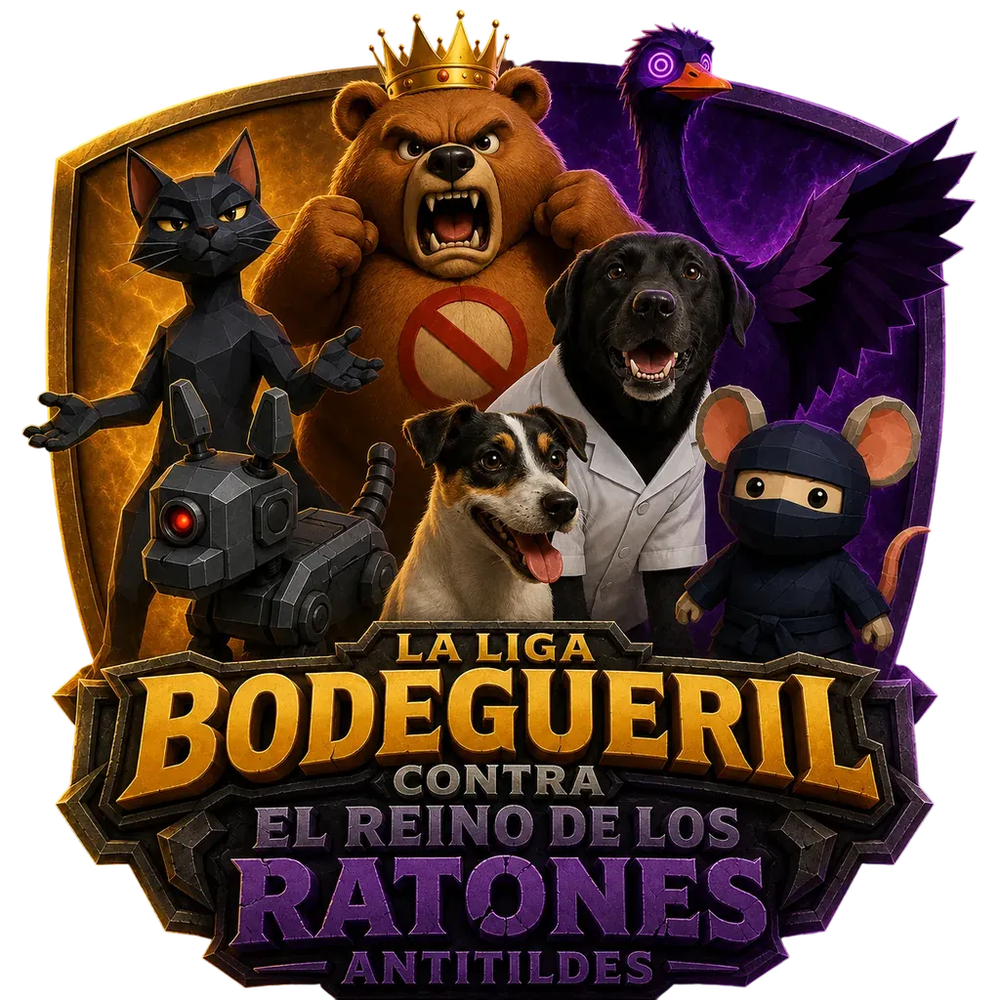
    </div>

    <div class="cartel__texto">
      <p class="rotulo">Villa&nbsp;Cangoose&nbsp;&#183; Ocho&nbsp;cap&#237;tulos</p>
      <h1 class="titulo metal entra" id="titular">Emma, Bimba y el Profesor Don Ganso se enfrentan a los Antitildes</h1>
      <div class="fleuron" style="width:min(300px,100%)"><i></i><em>&#10022;</em><i></i></div>
      <p class="entradilla justo"><span class="capital">A</span>nte el peligro ortogr&#225;fico que entra&#241;an los roedores antitildes, una bodeguera se alzar&#225; para restablecer el orden y devolver la paz a Villa&nbsp;Cangoose.</p>
      <div class="acciones">
        <button class="boton" type="button" data-jugar>Jugar ahora</button>
        <a class="boton2" href="juego/Emma_Juego_Completo.html" download data-descarga target="_blank" rel="noopener"><svg viewBox="0 0 24 24" fill="none" stroke="currentColor" stroke-width="2" stroke-linecap="round" stroke-linejoin="round" aria-hidden="true"><path d="M12 3v12"/><path d="M7 11l5 5 5-5"/><path d="M4 20h16"/></svg>Descargar</a>
        <a href="#capitulos">Los ocho cap&#237;tulos</a>
      </div>
    </div>
  </div>

  <div class="baja" aria-hidden="true"><u></u><em>Sigue</em></div>
</header>

<section class="juego grano losa" id="jugar">
  <div class="aire" aria-hidden="true"></div>
  <div class="tela tela--hondo" aria-hidden="true"></div>
  <div class="tela tela--tenue" aria-hidden="true"></div>
  <div class="halo" aria-hidden="true"></div>
  <div class="ocluye" aria-hidden="true"></div>
  <div class="remate remate--alto" aria-hidden="true"><b></b><b></b><b></b></div>
  <div class="centrado dentro">
    <p class="rotulo entra">El juego, aqu&#237; mismo</p>
    <h2 class="entra">No hay nada que instalar</h2>
    <p class="entra">El primer cap&#237;tulo entero va dentro de esta p&#225;gina: se abre y se juega aqu&#237; mismo, sin descargar nada.</p>

    <div class="consola placa entra" id="consola">
      <i class="esq e1"></i><i class="esq e2"></i><i class="esq e3"></i><i class="esq e4"></i>
      <i class="remache r1" aria-hidden="true"></i><i class="remache r2" aria-hidden="true"></i>
      <i class="remache r3" aria-hidden="true"></i><i class="remache r4" aria-hidden="true"></i>
      <div class="consola__carga" id="caratula">
        <div class="consola__lam" id="caraLam" aria-hidden="true"></div>
        <div class="consola__foco" aria-hidden="true"></div>
        <p class="chapa"><b>I</b><em>El aula vac&#237;a</em></p>
        <button class="boton" type="button" data-jugar>Jugar el cap&#237;tulo 1</button>
      </div>
    </div>

    <!-- EL TEXTO VA DENTRO DE UN <span>, y no suelto. `.sellos p` es un
         contenedor FLEX con `gap:10px`, y el marcador de tildes envuelve cada
         vocal acentuada en un <t>: suelto, ese <t> se convierte en ITEM del
         flex y el hueco de 10 px parte la palabra por la mitad. Se leia
         &#171;SIN CONEXI O N&#187;. Metido en el span, los items del flex vuelven a ser
         dos &#8212;la viNeta y la etiqueta&#8212; y el <t> queda dentro del texto. -->
    <div class="sellos entra">
      <p class="rotulo"><i aria-hidden="true"></i><span>Un solo archivo</span></p>
      <p class="rotulo"><i aria-hidden="true"></i><span>Sin conexi&#243;n</span></p>
      <p class="rotulo"><i aria-hidden="true"></i><span>Sin cuenta ni instalaci&#243;n</span></p>
    </div>
  </div>
</section>

<section class="gesto grano">
  <div class="aire" aria-hidden="true"></div>
  <div class="tela tela--hondo" aria-hidden="true"></div>
  <div class="tela tela--tenue" aria-hidden="true"></div>
  <div class="ocluye" aria-hidden="true"></div>

  <!-- LA HOJA: el papel deja de ser el fondo de la seccion y pasa a ser una
       pieza apoyada sobre la noche, con su rasgado y su sombra. -->
  <div class="hoja entra">
  <div class="gesto__borde" aria-hidden="true"></div>
  <div class="tela tela--papel" aria-hidden="true"></div>

  <div class="gesto__fila">
    <div class="gesto__texto">
      <p class="rotulo tinta">Todo el juego en un gesto</p>
      <h2>Toca la vocal.<br>Pulsa <b style="font-weight:600;border-bottom:2px solid rgba(184,145,47,.5)">OK</b>.</h2>
      <p class="justo">La letra se acent&#250;a y se vuelve dorada. Si la palabra no lleva tilde, se pulsa OK directamente &#8212; y ah&#237; est&#225; la mitad del examen.</p>
      <p class="nota2 justo">Bajo presi&#243;n el instinto es dar OK a todo. Por eso <b>fallar cuesta un coraz&#243;n &#8212; y ponerle una tilde de m&#225;s, tambi&#233;n</b>.</p>
    </div>

    <div class="gesto__ficha">
      <div class="papel">
        <div class="letras"><span class="letra">c</span><span class="letra">a</span><span class="letra">n</span><span class="letra">c</span><span class="letra">i</span><span class="letra acento">&#243;</span><span class="letra">n</span></div>
        <div class="barra" style="margin-bottom:14px"><i></i></div>
        <button class="ok" type="button" tabindex="-1" aria-hidden="true">OK</button>
      </div>
      <p class="pieficha">Aguda acabada en -n</p>
    </div>
  </div>

  <div class="tira">
    <div class="tira__caja">
    <div class="tira__pista" id="tiraPista" tabindex="0"
     aria-label="Escenas del juego">
      <article class="toma"><span class="tira__marco">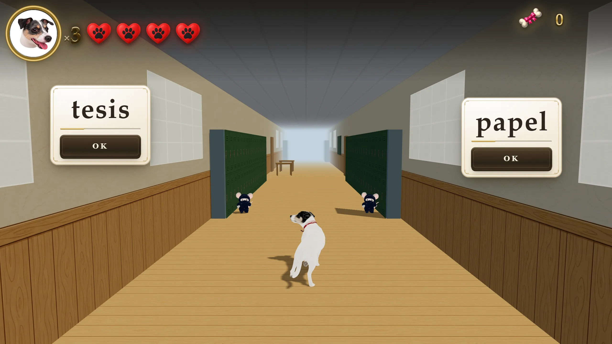</span>
    <p class="toma__pie"><i>Cap&#237;tulo I</i>El rat&#243;n <b>es</b> el reloj: cuanto m&#225;s se acerca, menos tiempo queda</p></article>
      <article class="toma"><span class="tira__marco">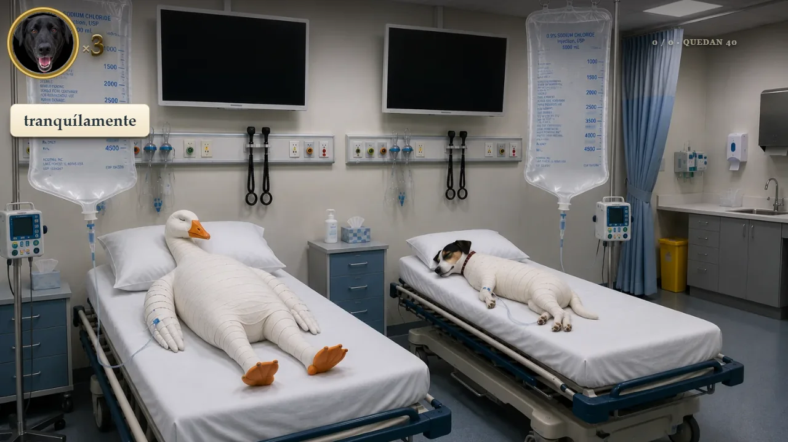</span>
    <p class="toma__pie"><i>Cap&#237;tulo IV</i>Aqu&#237; llegan <b>ya escritas</b>: si est&#225; mal, se retira; si est&#225; bien, se deja pasar</p></article>
      <article class="toma"><span class="tira__marco">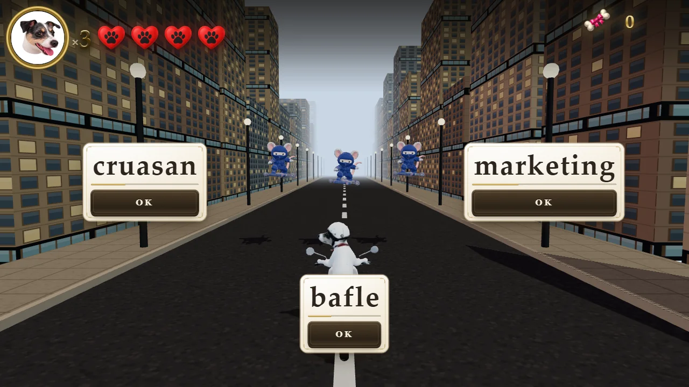</span>
    <p class="toma__pie"><i>Cap&#237;tulo VI</i>Emma sale a repartir y los <b>extranjerismos</b> la asaltan por la avenida</p></article>
      <article class="toma"><span class="tira__marco">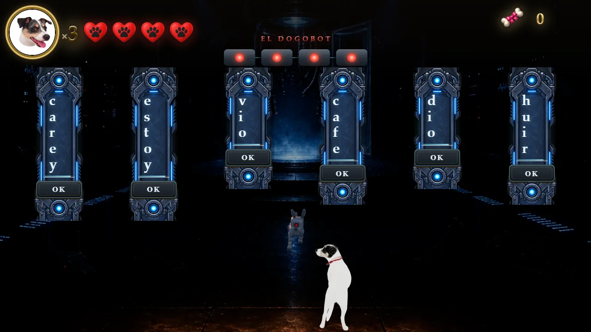</span>
    <p class="toma__pie"><i>Cap&#237;tulo VII</i>El Dogobot aplica las reglas a la perfecci&#243;n y <b>no entiende una palabra</b></p></article>
    </div>
      <button class="tira__fle tira__fle--izq" id="tiraIzq" type="button"
        aria-label="Escena anterior"><svg viewBox="0 0 24 24" fill="none"
        stroke="currentColor" stroke-width="2.4" stroke-linecap="round"
        stroke-linejoin="round" aria-hidden="true"><path d="M15 5l-7 7 7 7"/></svg></button>
      <button class="tira__fle tira__fle--der" id="tiraDer" type="button"
        aria-label="Escena siguiente"><svg viewBox="0 0 24 24" fill="none"
        stroke="currentColor" stroke-width="2.4" stroke-linecap="round"
        stroke-linejoin="round" aria-hidden="true"><path d="M9 5l7 7-7 7"/></svg></button>
    </div>
    <nav class="tira__puntos" id="tiraPuntos" aria-label="Ir a una escena"></nav>
      </div>
  </div>
</section>

<section class="friso grano losa" id="capitulos">
  <div class="aire" aria-hidden="true"></div>
  <div class="tela tela--hondo" aria-hidden="true"></div>
  <div class="tela" aria-hidden="true"></div>
  <div class="halo" aria-hidden="true"></div>
  <div class="ocluye" aria-hidden="true"></div>
  <div class="remate remate--alto" aria-hidden="true"><b></b><b></b><b></b></div>
  <div class="dentro">
    <div class="friso__cab entra">
      <div>
        <p class="rotulo">Los ocho cap&#237;tulos</p>
        <h2>De las agudas y llanas al examen de acceso</h2>
      </div>
      <p class="justo">Cada uno se abre y se juega en el navegador, con su lecci&#243;n, su jefe y su propio banco de palabras. El &#250;ltimo los pone a todos a prueba con ex&#225;menes de verdad.</p>
      <p class="suelto"><i aria-hidden="true"></i><span>Cada cap&#237;tulo es un archivo aparte: <b>se juega el que toque</b>, sin pasar por los anteriores</span></p>
    </div>
    <div class="friso__tira entra"><figure><a href="cap/1/" target="_blank" rel="noopener" title="Jugar el cap&#237;tulo 1 &#183; El aula vac&#237;a"><span class="marco"><span class="lam">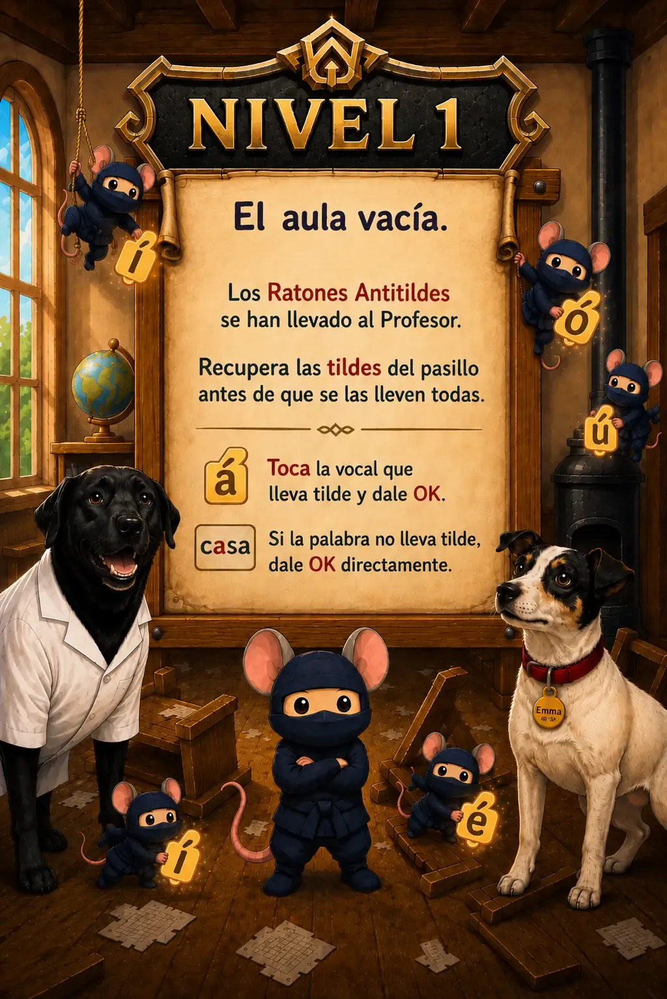<span class="jugar"><svg viewBox="0 0 12 12" fill="currentColor" aria-hidden="true"><path d="M2 1l9 5-9 5z"/></svg>Jugar</span></span></span><figcaption><span class="romano">I</span><span class="titulillo">El aula vac&#237;a</span><span class="leccion">Agudas y llanas</span></figcaption></a></figure><figure><a href="cap/2/" target="_blank" rel="noopener" title="Jugar el cap&#237;tulo 2 &#183; La sala de clasificaci&#243;n"><span class="marco"><span class="lam">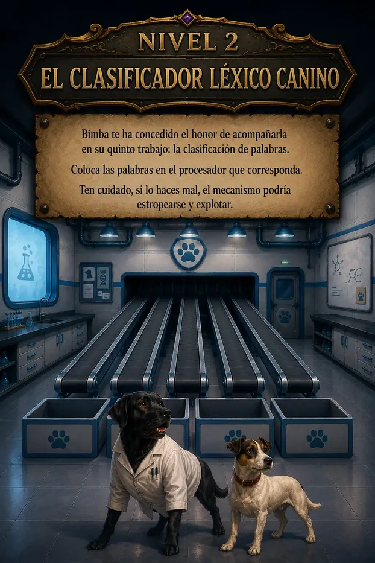<span class="jugar"><svg viewBox="0 0 12 12" fill="currentColor" aria-hidden="true"><path d="M2 1l9 5-9 5z"/></svg>Jugar</span></span></span><figcaption><span class="romano">II</span><span class="titulillo">La sala de clasificaci&#243;n</span><span class="leccion">Esdr&#250;julas y sobresdr&#250;julas</span></figcaption></a></figure><figure><a href="cap/3/" target="_blank" rel="noopener" title="Jugar el cap&#237;tulo 3 &#183; El bosque"><span class="marco"><span class="lam">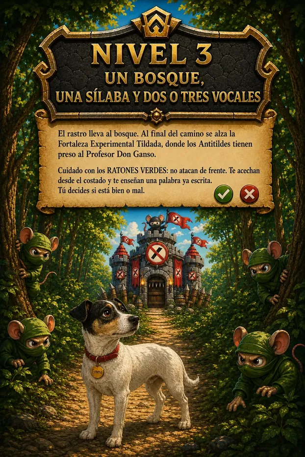<span class="jugar"><svg viewBox="0 0 12 12" fill="currentColor" aria-hidden="true"><path d="M2 1l9 5-9 5z"/></svg>Jugar</span></span></span><figcaption><span class="romano">III</span><span class="titulillo">El bosque</span><span class="leccion">Diptongos y triptongos</span></figcaption></a></figure><figure><a href="cap/4/" target="_blank" rel="noopener" title="Jugar el cap&#237;tulo 4 &#183; La UCI de la Dogtora"><span class="marco"><span class="lam">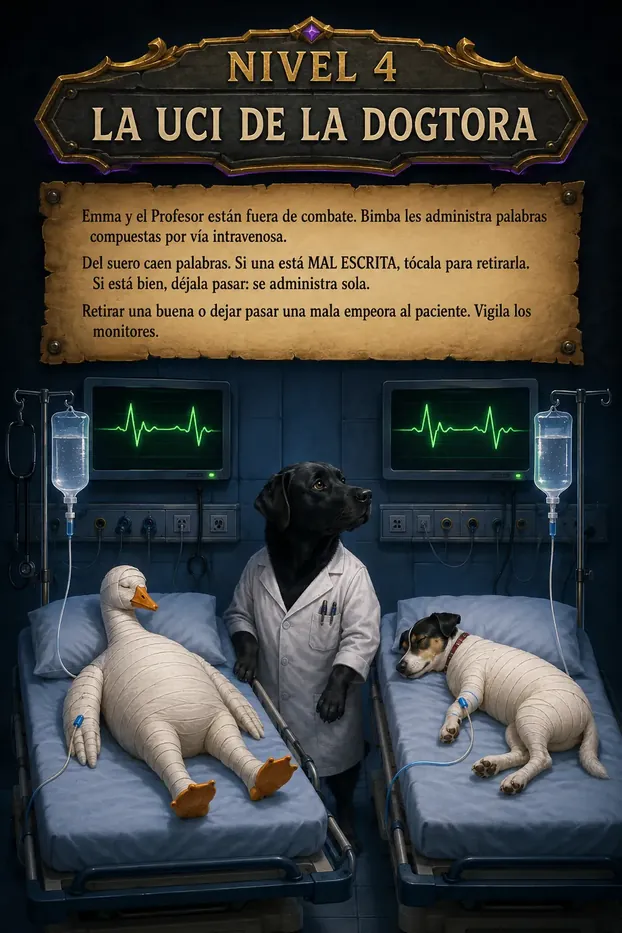<span class="jugar"><svg viewBox="0 0 12 12" fill="currentColor" aria-hidden="true"><path d="M2 1l9 5-9 5z"/></svg>Jugar</span></span></span><figcaption><span class="romano">IV</span><span class="titulillo">La UCI de la Dogtora</span><span class="leccion">Compuestas y la -y final</span></figcaption></a></figure><figure><a href="cap/5/" target="_blank" rel="noopener" title="Jugar el cap&#237;tulo 5 &#183; El asedio a la escuela"><span class="marco"><span class="lam">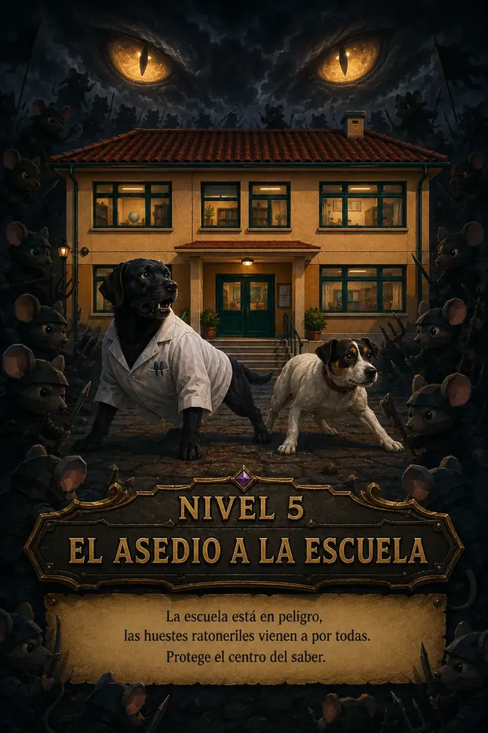<span class="jugar"><svg viewBox="0 0 12 12" fill="currentColor" aria-hidden="true"><path d="M2 1l9 5-9 5z"/></svg>Jugar</span></span></span><figcaption><span class="romano">V</span><span class="titulillo">El asedio a la escuela</span><span class="leccion">Hiatos</span></figcaption></a></figure><figure><a href="cap/6/" target="_blank" rel="noopener" title="Jugar el cap&#237;tulo 6 &#183; La avenida del reparto"><span class="marco"><span class="lam">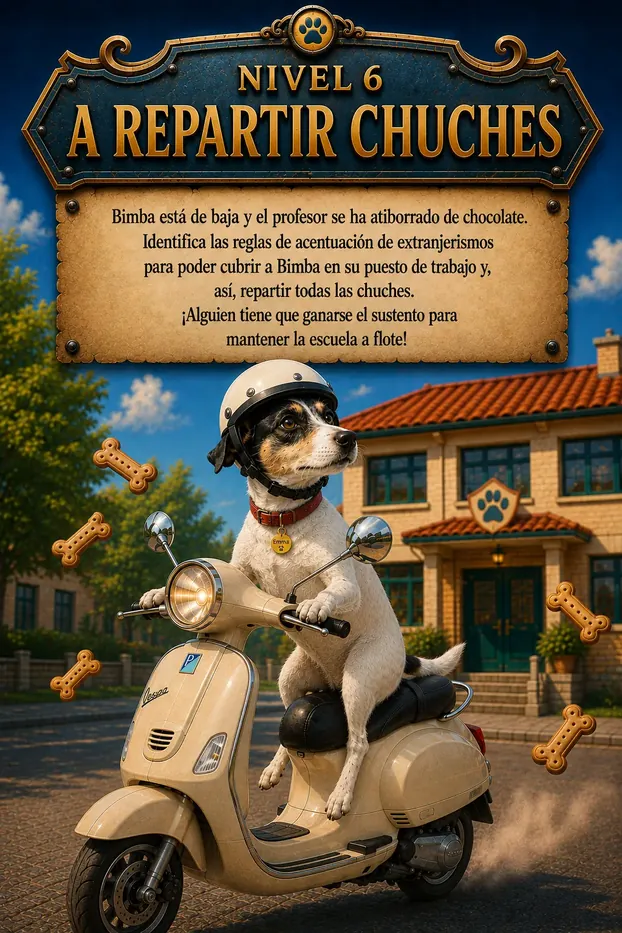<span class="jugar"><svg viewBox="0 0 12 12" fill="currentColor" aria-hidden="true"><path d="M2 1l9 5-9 5z"/></svg>Jugar</span></span></span><figcaption><span class="romano">VI</span><span class="titulillo">La avenida del reparto</span><span class="leccion">Extranjerismos</span></figcaption></a></figure><figure><a href="cap/7/" target="_blank" rel="noopener" title="Jugar el cap&#237;tulo 7 &#183; El camino al castillo"><span class="marco"><span class="lam">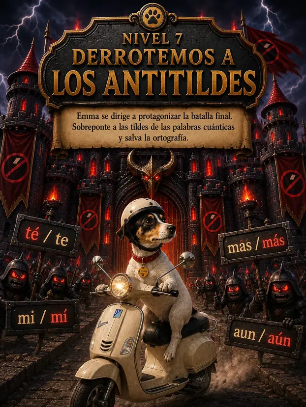<span class="jugar"><svg viewBox="0 0 12 12" fill="currentColor" aria-hidden="true"><path d="M2 1l9 5-9 5z"/></svg>Jugar</span></span></span><figcaption><span class="romano">VII</span><span class="titulillo">El camino al castillo</span><span class="leccion">Diacr&#237;ticas</span></figcaption></a></figure><figure><a href="cap/8/" target="_blank" rel="noopener" title="Jugar el cap&#237;tulo 8 &#183; La huida"><span class="marco"><span class="lam">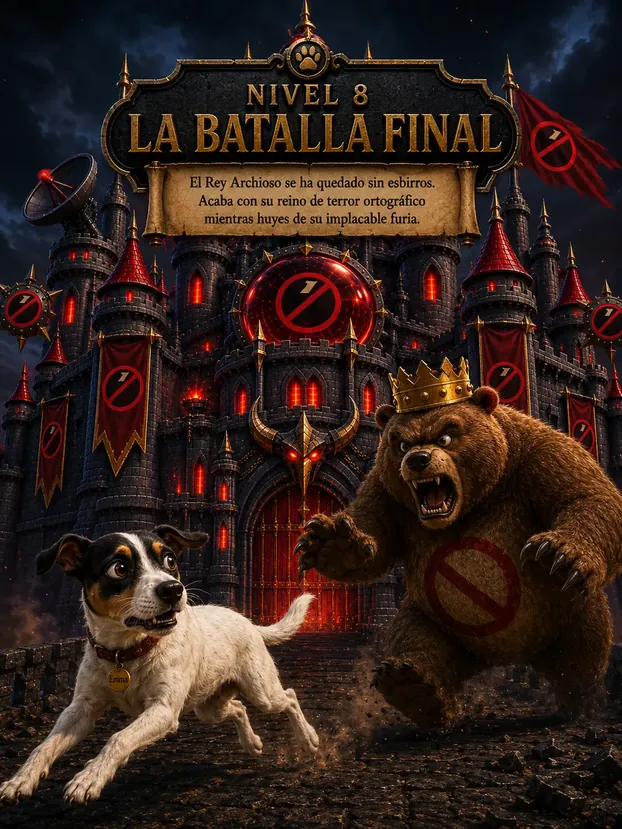<span class="jugar"><svg viewBox="0 0 12 12" fill="currentColor" aria-hidden="true"><path d="M2 1l9 5-9 5z"/></svg>Jugar</span></span></span><figcaption><span class="romano">VIII</span><span class="titulillo">La huida</span><span class="leccion">Ex&#225;menes PAU +25 oficiales</span></figcaption></a></figure></div>
  </div>
</section>

<section class="etapas grano losa" id="etapas">
  <div class="aire" aria-hidden="true"></div>
  <div class="tela tela--tenue" aria-hidden="true"></div>
  <div class="ocluye" aria-hidden="true"></div>
  <div class="remate remate--alto" aria-hidden="true"><b></b><b></b><b></b></div>
  <div class="dentro">

    <div class="centrado entra">
      <p class="rotulo">C&#243;mo est&#225; pensado</p>
      <h2>Qu&#233; mide cada cap&#237;tulo</h2>
      <p>Los ocho cap&#237;tulos siguen el orden de la Ortograf&#237;a de la RAE: primero las reglas que se aplican mirando la palabra, despu&#233;s los casos en que la palabra no basta, y al final el examen. Se pueden jugar en cualquier orden, pero est&#225;n escritos para leerse as&#237;.</p>
    </div>

    <div class="etapas__rejilla entra">

      <div class="etapas__caja">
        <p class="rotulo">Cap&#237;tulos 1 a 5</p>
        <h3>La regla</h3>
        <p class="etapas__lista">Agudas y llanas &#183; esdr&#250;julas y sobresdr&#250;julas &#183; diptongos y triptongos &#183; palabras compuestas y acabadas en -y &#183; <b>hiatos</b>.</p>
        <p>Todo esto se resuelve <b>con la palabra delante</b>: se cuenta d&#243;nde carga la voz, se mira en qu&#233; letra acaba y se aplica la regla. No hay que saber nada m&#225;s, y es donde se automatiza el gesto: al terminar el quinto, poner la tilde deber&#237;a salir sin pensarlo.</p>
        <p class="etapas__dato"><span class="rotulo">Primaria y primer ciclo de Secundaria</span></p>
      </div>

      <div class="etapas__caja">
        <p class="rotulo">Cap&#237;tulos 6 y 7</p>
        <h3>Lo que la regla no dice</h3>
        <p>Aqu&#237; la palabra deja de bastar. <b>En el sexto</b> hay que saber de d&#243;nde viene: <em>esc&#225;ner</em> lleva tilde porque el espa&#241;ol la adopt&#243; y le aplica sus reglas, y <em>marketing</em> no la lleva porque sigue siendo una palabra de fuera. Las dos son llanas acabadas en consonante &#8212; la regla dir&#237;a lo mismo de las dos. Eso no se deduce, se conoce.</p>
        <p><b>En el s&#233;ptimo</b> hay que saber qu&#233; hace la palabra en la frase: <em>tu</em> y <em>t&#250;</em> se escriben con las mismas letras, y lo que las separa no es la ortograf&#237;a, es que una es posesivo y la otra pronombre. Por eso el juego no pide poner la tilde: pide <b>automatizar qu&#233; funci&#243;n hace</b>.</p>
        <p>Si alguien llega bien hasta el quinto nivel y se atasca en el sexto, no ha empeorado: le est&#225;n pidiendo otra cosa.</p>
        <p class="etapas__dato"><span class="rotulo">Segundo ciclo de Secundaria y Bachillerato</span></p>
      </div>

      <div class="etapas__caja">
        <p class="rotulo">Cap&#237;tulo 8</p>
        <h3>El examen</h3>
        <p>Diez convocatorias reales de las pruebas de acceso a la universidad para <b>mayores de 25 a&#241;os de Catalu&#241;a</b>, con sus palabras y sus enunciados tal como salieron. Se repiten palabras entre convocatorias porque <b>en el examen se repiten</b>, y el juego lo avisa cuando pasa.</p>
        <p>Y trae un gesto que no aparece antes: separar en s&#237;labas. No es un adorno &#8212; es lo que decide d&#243;nde cae la tilde, y es lo que distingue <em>o-&#237;r</em> de <em>huir</em>.</p>
        <p class="etapas__dato"><span class="rotulo">Pruebas de acceso</span></p>
      </div>

    </div>

    <div class="centrado entra etapas__medio">
      <p class="rotulo">Tranquilo &#183; Desafiante &#183; Extremo</p>
      <h2>Los tres modos</h2>
      <p>Se eligen en la portada de cada cap&#237;tulo y cambian dos cosas: cu&#225;ntos corazones se tienen y cu&#225;nto tiempo hay para contestar. No cambian ni las palabras, ni las reglas, ni los jefes.</p>
    </div>

    <div class="etapas__rejilla entra">

      <div class="etapas__caja etapas__modo">
        <strong>Tranquilo</strong>
        <span class="etapas__cifra">5 corazones &#183; el doble de tiempo</span>
        <p>Para quien llega nuevo a un cap&#237;tulo. Es el que sale por defecto.</p>
        <p class="etapas__dato"><span class="rotulo">Primaria y primer ciclo de Secundaria</span></p>
      </div>

      <div class="etapas__caja etapas__modo">
        <strong>Desafiante</strong>
        <span class="etapas__cifra">5 corazones &#183; un 50&nbsp;% m&#225;s de tiempo</span>
        <p>Cuando la regla ya sale sin pararse a pensarla.</p>
        <p class="etapas__dato"><span class="rotulo">Segundo ciclo de Secundaria y Bachillerato</span></p>
      </div>

      <div class="etapas__caja etapas__modo">
        <strong>Extremo</strong>
        <span class="etapas__cifra">4 corazones &#183; el tiempo justo</span>
        <p>El juego como se concibi&#243;, y el reloj apretado es la condici&#243;n del examen de verdad.</p>
        <p class="etapas__dato"><span class="rotulo">Ciclos formativos y pruebas de acceso</span></p>
      </div>

    </div>

    <p class="etapas__cierre entra">Los tres modos siguen el mismo tramo que los cap&#237;tulos, pero <b>la etapa es s&#243;lo un punto de partida: el modo se elige por soltura, no por edad.</b> Un alumno de acceso que est&#225; pele&#225;ndose con los hiatos aprende m&#225;s en Tranquilo que fallando por tiempo en Extremo.</p>

    <p class="etapas__cierre entra"><b>Y por eso el modo dice algo.</b> Con el tiempo doblado, quien no termina un cap&#237;tulo es porque le falta la regla, no la velocidad: son dos problemas distintos y se arreglan de forma distinta. Con el reloj apretado los dos fallan igual y no hay manera de saber cu&#225;l es cu&#225;l.</p>

    <p class="etapas__cierre entra">Al terminar cada cap&#237;tulo <b>se descarga la lista de fallos</b>: la palabra, c&#243;mo se escribi&#243;, qu&#233; tipo de fallo fue &#8212; tilde que falta, tilde de m&#225;s, tilde en la vocal equivocada, tiempo agotado &#8212; y si acab&#243; acert&#225;ndola m&#225;s adelante.</p>

  </div>
</section>

<section class="reparto grano losa" id="reparto">
  <div class="aire" aria-hidden="true"></div>
  <div class="tela tela--tenue" aria-hidden="true"></div>
  <div class="ocluye" aria-hidden="true"></div>
  <div class="remate remate--alto" aria-hidden="true"><b></b><b></b><b></b></div>
  <div class="reparto__fila">
    <div class="reparto__texto entra">
      <p class="rotulo">Para el aula</p>
      <h2>Un archivo, treinta alumnos</h2>
      <p>Se descarga desde aqu&#237; en un solo archivo y se abre con doble clic. Tambi&#233;n se reparte por USB o por el aula virtual: no pide cuenta, no manda datos a ninguna parte y no necesita conexi&#243;n.</p>
      <div class="acciones" style="margin-top:26px;justify-content:center">
        <a class="boton" href="juego/Emma_Juego_Completo.html" download data-descarga target="_blank" rel="noopener">Descargar el juego completo</a>
      </div>
    </div>
  </div>
</section>

<footer class="pie">
  <div style="display:flex;align-items:center;justify-content:center;gap:26px;margin:0 auto 34px;max-width:min(340px,74%)">
    <i class="fleuron" style="flex:1" aria-hidden="true"><i></i></i>
    <span class="lacre" aria-hidden="true"><em>&#10022;</em></span>
    <i class="fleuron" style="flex:1" aria-hidden="true"><i></i></i>
  </div>
  <div class="pie__cuerpo">
    <p><span class="sello">CC BY-NC-ND 4.0</span>Se puede copiar y repartir citando la fuente. No se permite el uso comercial, ni reutilizar el material, ni alterarlo.</p>
    <p><span class="par">Im&#225;genes: <b>ChatGPT</b></span>&nbsp;&#183; <span class="par">C&#243;digo y montaje: <b>Claude</b></span>&nbsp;&#183; <span class="par">Modelos 3D: <b>Meshy</b></span>&nbsp;&#183; <span class="par">Todo el trabajo creativo: <b>Oscar Alejandro Ba&#241;os</b></span></p>
  </div>
</footer>

<script>
(function () {
  var quieto = window.matchMedia &&
               window.matchMedia('(prefers-reduced-motion: reduce)').matches;
  var conRaton = window.matchMedia && window.matchMedia('(hover:hover)').matches;

  /* \u2550\u2550\u2550\u2550 LAS TILDES QUE LATEN \u2550\u2550\u2550\u2550
     Cada vocal acentuada se envuelve en un <t> para que pueda encenderse
     con su propio compas. El titular NO se trocea: el metal va en el <h1>
     entero, que es lo que le da una sola rampa de luz. */
  var TILDES = '\u00e1\u00e9\u00ed\u00f3\u00fa\u00c1\u00c9\u00cd\u00d3\u00da';

  /* SI BRILLA EN ORO, ES UNA TILDE \u2014 la regla del \u00a74 llevada a la pagina: se
     recorren los nodos de TEXTO de los titulares y se envuelve cada vocal
     acentuada. Camina los nodos y NO toca el innerHTML, asi que no rompe la
     capitular ni ningun <b> que haya dentro. */
  function marcarTildes(raiz, compas) {
    var and = document.createTreeWalker(raiz, NodeFilter.SHOW_TEXT, null);
    var sueltos = [], nodo, i = compas;
    while ((nodo = and.nextNode())) {
      if (nodo.parentNode && nodo.parentNode.tagName !== 'T') sueltos.push(nodo);
    }
    for (var s = 0; s < sueltos.length; s++) {
      var t = sueltos[s], txt = t.nodeValue;
      var hay = false;
      for (var v = 0; v < txt.length; v++) if (TILDES.indexOf(txt[v]) >= 0) hay = true;
      if (!hay) continue;
      var frag = document.createDocumentFragment(), buf = '';
      for (var c = 0; c < txt.length; c++) {
        if (TILDES.indexOf(txt[c]) >= 0) {
          if (buf) { frag.appendChild(document.createTextNode(buf)); buf = ''; }
          var marca = document.createElement('t');
          marca.textContent = txt[c];
          marca.style.setProperty('--tr', ((i++ % 7) * 0.46).toFixed(2) + 's');
          frag.appendChild(marca);
        } else { buf += txt[c]; }
      }
      if (buf) frag.appendChild(document.createTextNode(buf));
      t.parentNode.replaceChild(frag, t);
    }
  }

  var conTilde = document.querySelectorAll(
    '.titulo, .entradilla, .rotulo, .centrado h2, .friso__cab h2, ' +
    '.reparto__texto h2, .gesto__texto h2, .leccion, .nota p, ' +
    '.etapas__caja h3, .etapas__modo strong, ' +
    '.friso .titulillo, .chapa em, .centrado > p, .friso__cab > p, ' +
    '.gesto__texto > p, ' +
    '.reparto__texto > p, .pieficha');
  for (var q = 0; q < conTilde.length; q++) marcarTildes(conTilde[q], q);

  /* \u2550\u2550\u2550\u2550 LAS TILDES EN EL AIRE \u2550\u2550\u2550\u2550 dieciocho, cada una con su sitio, su
     tamano, su compas y su giro \u2014 y su DESENFOQUE, que es lo que las manda
     al fondo: las pequenas van borrosas y las grandes nitidas. Se siembran
     desde JS para no ensuciar el HTML con dieciocho nodos decorativos. */
  var cielo = document.getElementById('acentos');
  if (cielo && !quieto) {
    var SITIO = [6,14,21,29,36,44,51,58,65,72,79,86,11,25,41,62,76,92];
    var html = '';
    for (var k = 0; k < SITIO.length; k++) {
      var z = 16 + (k * 7) % 30;               /* de 16 a 44 px */
      var lejos = (44 - z) / 28;               /* 1 = lejisimos, 0 = delante */
      html += '<b style="left:' + SITIO[k] + '%;top:' + (12 + (k * 13) % 74) + '%;' +
              '--z:' + z + 'px;--d:' + (26 + (k * 5) % 22) + 's;' +
              '--r:' + (k * 1.7).toFixed(1) + 's;' +
              '--f:' + (lejos * 2.6).toFixed(2) + 'px;' +
              '--o:' + (0.5 - lejos * 0.3).toFixed(2) + ';' +
              '--g:' + ((k % 3) * 6 - 6) + 'deg;--g2:' + ((k % 4) * 7 - 8) + 'deg">' +
              '\u00b4</b>';
    }
    cielo.innerHTML = html;
  }

  /* \u2550\u2550\u2550\u2550 LA LINTERNA, EL EMBLEMA Y LAS CARTAS \u2550\u2550\u2550\u2550 una sola escucha del
     raton para las tres cosas, con un solo frame de trabajo por movimiento.
     Las cartas se inclinan HACIA el cursor: es el gesto que mas dice \u00abcarta
     de juego\u00bb y cuesta dos multiplicaciones. */
  var emblema = document.getElementById('emblema');
  var cartas = document.querySelectorAll('.friso figure');
  if (!quieto && conRaton) {
    var px = 0, py = 0, pedido = false;
    var lim = function (v) { return Math.max(-1, Math.min(1, v)); };
    window.addEventListener('mousemove', function (e) {
      px = e.clientX; py = e.clientY;
      if (pedido) return;
      pedido = true;
      window.requestAnimationFrame(function () {
        pedido = false;
        /* PRIMERO SE LEE, LUEGO SE ESCRIBE. Escribir --mx/--my en :root
           invalida el estilo heredado de toda la pagina, y un
           getBoundingClientRect justo despues obliga a recalcular estilo y
           layout enteros \u2014 en cada frame que se mueva el raton. Las nueve
           lecturas van antes y la escritura, una sola vez, al final. */
        if (emblema) {
          var r = emblema.getBoundingClientRect();
          if (r.bottom > 0 && r.top < window.innerHeight) {
            var dx = (px - (r.left + r.width / 2)) / (r.width || 1);
            var dy = (py - (r.top + r.height / 2)) / (r.height || 1);
            emblema.style.setProperty('--gx', (lim(dx) * 7).toFixed(2) + 'deg');
            emblema.style.setProperty('--gy', (-lim(dy) * 5).toFixed(2) + 'deg');
          }
        }
        for (var c = 0; c < cartas.length; c++) {
          var b = cartas[c].getBoundingClientRect();
          if (b.bottom < -80 || b.top > window.innerHeight + 80) continue;
          var mx = (px - (b.left + b.width / 2)) / (b.width || 1);
          var my = (py - (b.top + b.height / 2)) / (b.height || 1);
          var cerca = Math.abs(mx) < 1.15 && Math.abs(my) < 1.15;
          cartas[c].style.setProperty('--tx', cerca ? (lim(mx) * 10).toFixed(2) + 'deg' : '0deg');
          cartas[c].style.setProperty('--ty', cerca ? (-lim(my) * 8).toFixed(2) + 'deg' : '0deg');
        }
        var raiz = document.documentElement;
        raiz.style.setProperty('--mx', (px / window.innerWidth * 100).toFixed(2) + '%');
        raiz.style.setProperty('--my', (py / window.innerHeight * 100).toFixed(2) + '%');
      });
    }, {passive: true});
  }

  /* \u2550\u2550\u2550\u2550 EL JUEGO ADENTRO \u2550\u2550\u2550\u2550 el capitulo 1 va incrustado como cadena y NO
     se monta al cargar: se monta al pulsar, asi la pagina abre ligera. Todos
     los `<` van escapados como \x3c \u2014es lo que hace pack_todo.py con el
     archivo maestro\u2014 para que nada corte esta pagina. */
  var JUEGO = "";
  var consola = document.getElementById('consola');
  var caratula = document.getElementById('caratula');
  var puesto = false;

  /* LA CARATULA ES LA PORTADA DEL CAPITULO 1. Se la pone el JS cogiendo la
     lamina que ya esta en la pagina \u2014la primera del friso\u2014, asi que NO se
     incrusta una copia mas en base64: son cero bytes de mas. */
  var caraLam = document.getElementById('caraLam');
  var primera = document.querySelector('.friso figure img');
  if (caraLam && primera) caraLam.style.backgroundImage = 'url("' + primera.src + '")';

  /* Y EL FONDO DESENFOCADO DEL CARTEL, IGUAL: es la misma lamina del emblema
     y nombrarla en el HTML metia una segunda copia de 87 KB en base64. */
  var elFondo = document.getElementById('cartelFondo');
  var laLiga = document.querySelector('.cartel__cara img');
  if (elFondo && laLiga) elFondo.style.backgroundImage = 'url("' + laLiga.src + '")';

  function arrancar() {
    if (puesto) { consola.scrollIntoView({block: 'center'}); return; }
    puesto = true;
    var marco = document.createElement('iframe');
    marco.title = 'Emma y el Profesor Don Ganso, capitulo 1';
    marco.allow = 'autoplay; fullscreen';
    consola.appendChild(marco);
    marco.src = 'cap/1/index.html';
    caratula.style.display = 'none';
    /* el boton pulsado vive DENTRO de la caratula que se acaba de ocultar, y
       con eso el foco se va a <body>: quien juega con teclado tendria que
       tabular desde el principio de la pagina para volver a entrar. */
    marco.setAttribute('tabindex', '-1');
    try { marco.focus({preventScroll: true}); } catch (e) { marco.focus(); }
    consola.scrollIntoView({block: 'center'});
    if (consola.requestFullscreen || consola.webkitRequestFullscreen) {
      var ancho = document.createElement('button');
      ancho.className = 'ancho';
      ancho.type = 'button';
      ancho.textContent = 'Pantalla completa';
      ancho.addEventListener('click', function () {
        var q = (consola.requestFullscreen || consola.webkitRequestFullscreen)
                .call(consola);
        if (q && q.catch) q.catch(function () {});
      });
      consola.appendChild(ancho);
      /* Safari dispara `webkitfullscreenchange` y expone
         `webkitFullscreenElement`: sin las dos variantes el boton entra en
         pantalla completa pero se queda diciendo \u00abPantalla completa\u00bb. En un
         iPhone no llega a crearse, que ahi la API no existe para un <div>. */
      var rotula = function () {
        ancho.textContent = (document.fullscreenElement ||
                             document.webkitFullscreenElement)
                            ? 'Salir' : 'Pantalla completa';
      };
      document.addEventListener('fullscreenchange', rotula);
      document.addEventListener('webkitfullscreenchange', rotula);
    }
  }
  var botones = document.querySelectorAll('[data-jugar]');
  for (var i = 0; i < botones.length; i++) botones[i].addEventListener('click', arrancar);

  /* \u2550\u2550\u2550\u2550 LO QUE ENTRA AL APARECER \u2550\u2550\u2550\u2550
     CON RED DE RESCATE: si el observador no dispara \u2014pestana en segundo
     plano al cargar, o un navegador que no lo trae\u2014 los bloques se quedarian
     invisibles PARA SIEMPRE. A los 2,5 s se revela lo que quede. Esta piedra
     ya esta apuntada tres veces en el proyecto: toda espera necesita rescate. */
  var trozos = document.querySelectorAll('.entra, .titulo');
  function revelar(el) { el.classList.add('visto'); }

  if (quieto || !('IntersectionObserver' in window)) {
    for (var m = 0; m < trozos.length; m++) revelar(trozos[m]);
  } else {
    var ojo = new IntersectionObserver(function (filas) {
      for (var k2 = 0; k2 < filas.length; k2++) {
        if (filas[k2].isIntersecting) {
          revelar(filas[k2].target);
          ojo.unobserve(filas[k2].target);
        }
      }
    }, {rootMargin: '0px 0px -12% 0px', threshold: 0.06});
    for (var j = 0; j < trozos.length; j++) ojo.observe(trozos[j]);
    /* RED DE RESCATE. Y no basta con poner la clase: una transicion que
       empieza sin que el navegador componga se congela en su primer
       fotograma, asi que el rescate SALTA al estado final. */
    window.setTimeout(function () {
      for (var n2 = 0; n2 < trozos.length; n2++) {
        if (!trozos[n2].classList.contains('visto')) {
          trozos[n2].classList.add('rescate');
        }
        revelar(trozos[n2]);
      }
    }, 2500);
  }

  /* \u2550\u2550\u2550\u2550 EL PARALAJE del cartel \u2550\u2550\u2550\u2550 */
  if (!quieto) {
    var capas = document.querySelectorAll('[data-paralaje]');
    var pendiente = false;
    window.addEventListener('scroll', function () {
      if (pendiente) return;
      pendiente = true;
      window.requestAnimationFrame(function () {
        pendiente = false;
        var y = window.pageYOffset || document.documentElement.scrollTop;
        if (y > 1500) return;
        for (var n = 0; n < capas.length; n++) {
          var f = parseFloat(capas[n].getAttribute('data-paralaje'));
          var esc = capas[n].getAttribute('data-escala');
          capas[n].style.transform = 'translate3d(0,' + (y * f).toFixed(1) + 'px,0)' +
                                     (esc ? ' scale(' + esc + ')' : '');
        }
      });
    }, {passive: true});
  }
})();
  /* \u2500\u2500 EL CARRUSEL \u2500\u2500\u2500\u2500\u2500\u2500\u2500\u2500\u2500\u2500\u2500\u2500\u2500\u2500\u2500\u2500\u2500\u2500\u2500\u2500\u2500\u2500\u2500\u2500\u2500\u2500\u2500\u2500\u2500\u2500\u2500\u2500\u2500\u2500\u2500\u2500\u2500\u2500\u2500\u2500\u2500\u2500\u2500\u2500\u2500\u2500\u2500\u2500\u2500\u2500\u2500\u2500\u2500\u2500\u2500\u2500
     Lo mueve el SCROLL NATIVO con anclaje; esto solo pone los mandos. Sin JS
     la tira se sigue arrastrando con el dedo y no se pierde nada.

     EL AVANCE AUTOMATICO SE PARA EN CUANTO ALGUIEN TOCA ALGO, y no vuelve:
     un carrusel que sigue moviendose mientras lo miras es de las cosas mas
     molestas que hay. Y ni arranca si el sistema pide menos movimiento. */
  (function () {
    var pista = document.getElementById('tiraPista');
    var caja = document.getElementById('tiraPuntos');
    var izq = document.getElementById('tiraIzq');
    var der = document.getElementById('tiraDer');
    if (!pista || !caja) return;
    var tomas = pista.querySelectorAll('.toma');
    if (tomas.length < 2) return;

    var cual = 0, botones = [], solo = null;

    var ir = function (n, suave) {
      n = Math.max(0, Math.min(tomas.length - 1, n));
      pista.scrollTo({ left: tomas[n].offsetLeft - pista.offsetLeft,
                       behavior: suave === false ? 'auto' : 'smooth' });
    };
    var quieto = function () {
      if (solo) { clearInterval(solo); solo = null; }
    };

    for (var i = 0; i < tomas.length; i++) {
      (function (n) {
        var b = document.createElement('button');
        b.type = 'button';
        b.setAttribute('aria-label', 'Escena ' + (n + 1) + ' de ' + tomas.length);
        b.addEventListener('click', function () { quieto(); ir(n); });
        caja.appendChild(b); botones.push(b);
      })(i);
    }

    var pinta = function () {
      var c = pista.scrollLeft + pista.clientWidth / 2, mejor = 1e9;
      for (var i = 0; i < tomas.length; i++) {
        var m = Math.abs((tomas[i].offsetLeft - pista.offsetLeft) +
                         tomas[i].offsetWidth / 2 - c);
        if (m < mejor) { mejor = m; cual = i; }
      }
      for (var j = 0; j < botones.length; j++)
        botones[j].setAttribute('aria-current', j === cual ? 'true' : 'false');
      if (izq) izq.disabled = (cual === 0);
      if (der) der.disabled = (cual === tomas.length - 1);
    };

    /* las flechas, centradas en la LAMINA y no en el bloque */
    var colocaFlechas = function () {
      var m = pista.querySelector('.tira__marco');
      if (!m) return;
      var h = Math.round(m.getBoundingClientRect().height / 2);
      [izq, der].forEach(function (b) {
        if (!b) return;
        b.style.display = 'flex';
        b.style.top = h + 'px';
      });
    };
    colocaFlechas();
    addEventListener('resize', colocaFlechas);
    var laPrimera = pista.querySelector('img');
    if (laPrimera) laPrimera.addEventListener('load', colocaFlechas);

    if (izq) izq.addEventListener('click', function () { quieto(); ir(cual - 1); });
    if (der) der.addEventListener('click', function () { quieto(); ir(cual + 1); });
    pista.addEventListener('keydown', function (e) {
      if (e.key !== 'ArrowLeft' && e.key !== 'ArrowRight') return;
      e.preventDefault(); quieto();
      ir(cual + (e.key === 'ArrowRight' ? 1 : -1));
    });

    var t = null;
    pista.addEventListener('scroll', function () {
      if (t) return;
      t = setTimeout(function () { t = null; pinta(); }, 90);
    }, { passive: true });
    ['pointerdown', 'wheel', 'touchstart'].forEach(function (ev) {
      pista.addEventListener(ev, quieto, { passive: true });
    });
    addEventListener('resize', pinta);
    pinta();

    /* el avance solo: 6 s, y da la vuelta al llegar al final */
    var lento = matchMedia('(prefers-reduced-motion: reduce)');
    if (!lento.matches) {
      solo = setInterval(function () {
        if (document.hidden) return;
        ir(cual + 1 >= tomas.length ? 0 : cual + 1);
      }, 6000);
    }
  })();

</script>
